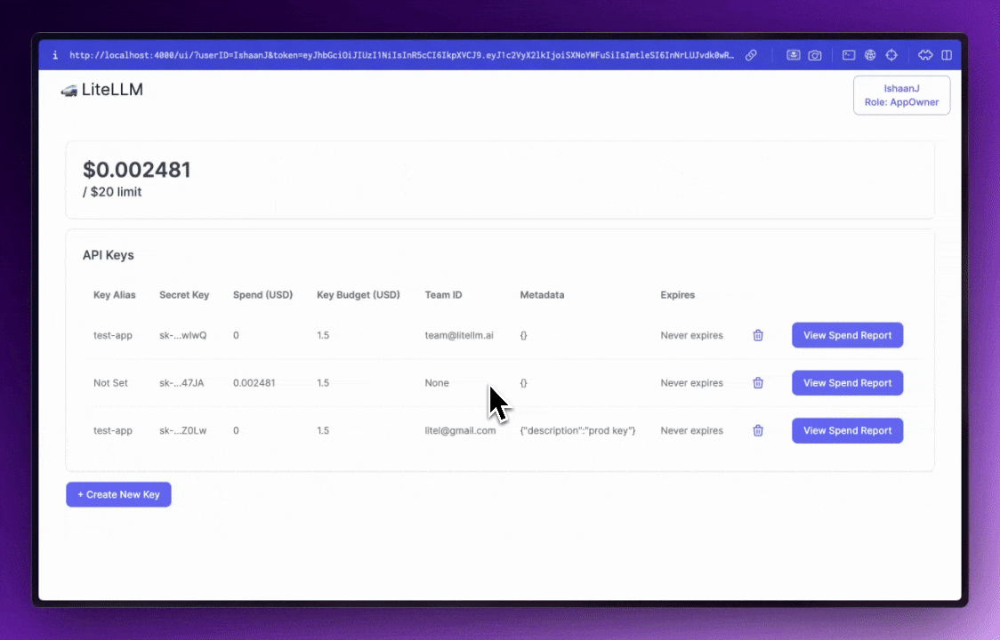

一张架构地图
LiteLLM 的核心不是“又一个模型 SDK”，而是一层统一协议和治理面。小团队可以只用 Python SDK，平台团队通常会把 Proxy 作为企业 AI Gateway。
该怎么读这 748 页
官方文档覆盖面很广，直接顺序阅读会被 Provider 和教程淹没。建议按角色选择路径。
应用开发者：先用 SDK 替换模型调用
阅读 Quickstart、completion 输入输出、streaming、function calling、provider-specific params、exception mapping。目标是把多家模型收敛成一套调用和错误处理。
平台工程师：把 Proxy 当 AI Gateway 设计
重点从 config.yaml、virtual keys、teams/users、budgets、routing、admin UI、deployment、database/Redis、fallbacks、guardrails、observability 串起来。
企业治理：从 key 到团队、成本、审计和安全
把“谁可以用哪个模型、能花多少钱、请求如何过滤、日志去哪、密钥如何托管”作为一条主线阅读。
Agent/MCP 团队：统一代理、工具和模型访问
LiteLLM 文档把 A2A Agent Gateway 和 MCP Gateway 放在同一治理体系里：同一个虚拟 key、权限、日志、成本跟踪和 header/identity 传递模型。
文档覆盖面速览
下面是按工程主题重新归类后的页面分布。最后的完整索引可以搜索每个页面标题和小节。
Python SDK
把不同 LLM Provider 转成统一的 OpenAI 风格调用。重点看 completion、stream、tools、Responses、files/vector stores、cost usage。
111 个页面
AI Gateway
面向团队和平台的 OpenAI-compatible 网关。重点看 config.yaml、virtual keys、budgets、admin UI、deployment。
197 个页面
Providers
100+ 模型和服务商接入。重点看 provider/model 前缀、环境变量、OpenAI-compatible、自定义 Provider。
195 个页面
Routing
跨部署负载均衡、fallback、cooldown、tag/wildcard routing、adaptive routing。
9 个页面
Governance
SSO/SCIM、RBAC、guardrails、secret manager、audit/data security、per-key policy。
23 个页面
Observability
Langfuse、Prometheus、OTel、Datadog、CloudZero、MLflow、Helicone 等日志/成本/评估链路。
54 个页面
Agents & MCP
A2A Agent Gateway、MCP Gateway、toolsets、OAuth/OBO、agent permissions、agent cost tracking。
32 个页面
Tutorials
Open WebUI、Claude Code、Codex、Cursor、LangChain、OpenAI Agents SDK、Google ADK 等实战接入。
69 个页面
Python SDK：统一调用面
SDK 是最轻的接入方式，适合应用直接调用模型。文档主线是：统一输入输出、Provider 参数翻译、工具调用、多模态、可靠性、成本和观测。
最小路径
安装后用同一个 completion() 调不同 Provider，模型名通常使用 provider/model 前缀。输出对齐 OpenAI Chat Completions 风格，异常也会映射到 OpenAI 兼容类型。
uv add litellm
from litellm import completion
response = completion(
model="openai/gpt-4o",
messages=[{"role": "user", "content": "Hello"}],
)SDK 能力清单
- Chat Completions、Responses API、text completion、embeddings、rerank、moderation。
- 图片生成/编辑/变体、音频转写和 TTS、realtime、video、document/PDF input。
- function calling、tool calling、structured output、prompt caching、message trimming。
- 批处理、fine-tuning、files、containers、projects、vector stores。
相关页面
| /v1/messages/count_tokens | Overview / Quick Start / 1. Start LiteLLM Proxy |
| /v1/messages | Overview / Usage / LiteLLM Python SDK |
| v1/messages → /responses Parameter Mapping | Request: Anthropic → Responses API / Top-level parameters / How messages get converted |
| Structured Output /v1/messages | Supported Providers / Usage / LiteLLM Proxy Server |
| /assistants | Supported Providers : / Quick Start / SDK + PROXY |
| /audio/transcriptions | Overview / Quick Start / LiteLLM Python SDK |
| /batches | Quick Start / Multi-Account / Model-Based Routing / How It Works |
| /converse | Quick Start / 1. Setup config.yaml / 2. Start Proxy |
| /invoke | Quick Start / 1. Setup config.yaml / 2. Start Proxy |
| Chat Completions | 📄️ Input Params / 📄️ Output / 📄️ Usage |
| Advisor Tool | Supported Providers / How it works (LiteLLM native orchestration) / Model Compatibility |
| Using Audio Models | Audio Output from a model / Audio Input to a model / Checking if a model supports audio_input and audio_output |
| Batching Completion() | Send multiple completion calls to 1 model / Example Code / Send 1 completion call to many models: Return Fastest Response |
| Computer Use | Quick Start / Checking if a model supports computer use / Different Tool Types |
应用侧判断
只需要把一个 Python 服务接到多模型，先用 SDK。需要集中管控 key、团队预算、审计、模型权限、统一入口或非 Python 客户端，转向 Proxy。
AI Gateway / Proxy：组织级统一入口
Proxy 是 LiteLLM 文档中最大的一块。它把任何 OpenAI-compatible 客户端接到同一网关，并在网关层做鉴权、模型映射、路由、成本、日志、guardrails 和管理 UI。
启动方式
官方文档给出 CLI、Docker、Helm/Kubernetes、DB-backed deployment 等路线。生产环境通常会配 Postgres、Redis、master key、config 管理和多个实例。
uv tool install 'litellm[proxy]'
litellm --model huggingface/bigcode/starcoder
# OpenAI client:
# base_url = http://localhost:4000
接入层
OpenAI SDK、Anthropic-style endpoints、Bedrock/Vertex pass-through、AI coding tools、Open WebUI 等都可以指向 Proxy。
治理层
virtual keys、users、teams、orgs、projects、budgets、rate limits、model access groups、metadata/tag routing。
运行层
config.yaml、DB migrations、Redis cache、Helm、autoscaling、admin UI、health checks、debug endpoints。
Proxy 重点页面
| LiteLLM Proxy - Locust Load Test | Locust Load Test LiteLLM Proxy |
| LiteLLM Proxy - 1K RPS Load test on locust | Pre-Testing Checklist / Load Test - Fake OpenAI Endpoint / Expected Performance |
| Multi-Instance TPM/RPM (litellm.Router) | Code / Multi-Instance TPM/RPM Load Test (Proxy) / 1. Setup config |
| LiteLLM SDK vs OpenAI | /docs/load_test_sdk |
| 🔑 LiteLLM Keys (Access Claude-2, Llama2-70b, etc.) | usage (community-key) / Supported Models for LiteLLM Key / For OpenInterpreter |
| SDK Proxy Authentication (OAuth2/JWT Auto-Refresh) | Overview / Quick Start / Azure AD |
| [OLD PROXY 👉 NEW proxy here ] Local LiteLLM Proxy Server | Usage / Test / Replace openai base |
| Role-based Access Controls (RBAC) | Video Walkthrough / When to Use Each Key Type / User Roles |
| Access Groups | Overview / How It Works / How to Create and Use Access Groups in the UI |
| ✨ SSO for Admin UI | Usage (Google, Microsoft, Okta, etc.) / Video Walkthrough / Step 1: Create an OIDC Application in Okta |
| Agentic Loop Hook | Implement the callback / Register it / AgenticLoopPlan fields |
| AI Hub | Overview / Models / How to use |
| Alerting / Webhooks | Quick Start / Step 1: Add a Slack Webhook URL to env / Step 2: Setup Proxy |
| Life of a Request | High Level architecture / Request Flow / Frequently Asked Questions |
Providers：模型接入和参数翻译
Provider 文档最多，覆盖云厂商、开源推理服务、OpenAI-compatible API 和特殊 pass-through。阅读时不要试图逐页背诵，先抓住配置模式。
命名模式
| 模型名形态 | 含义 |
|---|---|
openai/gpt-4o | 显式指定 OpenAI provider。 |
anthropic/... | Anthropic Messages/Claude 系列。 |
azure/<deployment> | Azure OpenAI deployment 名映射。 |
bedrock/... | AWS Bedrock 模型 ID 或 Converse/Invoke 相关接口。 |
vertex_ai/... | Google Vertex AI / Gemini 相关模型。 |
ollama/..., hosted_vllm/... | 本地或自托管推理服务。 |
Provider 阅读方法
- 先看目标 Provider 的认证变量、base URL、region/project/deployment 约束。
- 再看哪些 OpenAI 参数被翻译、哪些需要 provider-specific params。
- 最后看 streaming、tool calling、vision、embeddings、batch、pass-through 是否支持。
接入策略
如果 Provider 已在官方列表中，优先使用内置 adapter。如果是私有网关或新模型，优先尝试 OpenAI-compatible provider；参数差异明显时再看 adding provider / transformation 文档。
Provider 页面样例
| Anthropic Passthrough | Example Usage / Quick Start / Examples |
| AssemblyAI | Supported Routes / Quick Start / Calling AssemblyAI EU endpoints |
| Azure Passthrough | Overview / When to use this? / Usage Examples |
| Bedrock (boto3) SDK | Overview / 1. Using config.yaml (Recommended for model endpoints) / 2. Direct passthrough (For non-model endpoints) |
| Cohere SDK | Example Usage / Quick Start / Examples |
| Cursor Cloud Agents | Quick Start / 1. Add Cursor API Key on the UI / 2. Launch a Cursor Agent |
| Google AI Studio SDK | Example Usage / Quick Start / Examples |
| Why Pass-Through Endpoints? | How is your request handled? / Request Forwarding Process / Authentication Flow |
| Langfuse SDK | Example Usage / Quick Start / Advanced - Use with Virtual Keys |
| Mistral | Example Usage / Quick Start / Examples |
| OpenAI Passthrough | Overview / Available Endpoints / /openai_passthrough - Recommended |
| Vertex AI SDK | Supported Endpoints / How to use / Example Usage |
| Vertex AI Live API WebSocket Passthrough | Overview / Configuration / Environment Variables |
| Vertex AI Search Datastores | What you get / Quick Start / Managed Vector Stores (Recommended) |
治理、安全和 Guardrails
LiteLLM 的生产价值主要体现在治理面：把模型访问变成可授权、可限额、可审计、可过滤、可观测的组织资源。
身份与权限
使用 virtual keys 做调用凭据，再用 user/team/org/project 建模组织结构。企业场景再接 SSO/SAML、SCIM、OIDC 和 RBAC。
预算与成本
按 key、user、team、model、project 跟踪 spend，可配置预算、rate limit、provider margin、cost per token 或自定义成本表。
内容安全
Guardrails 覆盖输入和输出，可接 Presidio、Aporia、Bedrock Guardrails、custom guardrail、generic guardrail API 等。
密钥和数据
文档覆盖 secret managers、environment variable 引用、data security、audit logs、header passthrough 和 zero-trust 风格的 MCP 鉴权。
实践建议
不要把 Proxy 只当反向代理。生产落地时先定义团队、模型权限、预算和日志字段，再接入 Provider。否则后续成本归因和权限拆分会很难补。
路由和可靠性
LiteLLM Router 是跨模型、跨 deployment 的可靠性层。它处理 fallback、load balancing、cooldown、重试、tag/wildcard routing，以及实验性的 adaptive routing。
典型用法
- 同模型多 deployment 做负载均衡和故障切换。
- 主模型失败或限流时 fallback 到备用模型。
- 按请求 metadata、team、tag、model group 或 wildcard 控制路由。
- 按成本、质量或延迟调度，必要时对请求做 traffic mirroring。
相关页面
| [BETA] Adaptive Router | Quick start / Tuning cost vs. quality / Force a minimum quality tier per request |
| Caching - In-Memory, Redis, s3, gcs, Redis Semantic Cache, Disk | Initialize Cache - In Memory, Redis, s3 Bucket, gcs Bucket, Redis Semantic, Disk Cache, Qdrant Semantic / Quick Start / Quick Start |
| Hosted Cache - api.litellm.ai | Quick Start Usage - Completion / Usage - Embedding() / Caching with Streaming |
| LiteLLM - Local Caching | Caching completion() and embedding() calls when switched on / Quick Start Usage - Completion / Custom Key-Value Pairs |
| Router Architecture (Fallbacks / Retries) | High Level architecture / Request Flow / Legend |
| Router - Load Balancing | Load Balancing / Quick Start / Available Endpoints |
| Routing & Load Balancing | 📄️ Router - Load Balancing / 📄️ [BETA] Adaptive Router / 📄️ [BETA] Request Prioritization |
| A/B Testing - Traffic Mirroring | Quick Start / How it works / Key Features |
| Provider specific Wildcard routing | Step 1. Define provider specific routing / [PROXY-Only] Step 2 - Run litellm proxy / Step 3 - Test it |
观测、成本和评估
LiteLLM 文档的观测部分覆盖 callback、proxy logs、Prometheus、OpenTelemetry、多种 SaaS 日志平台和 eval 工作流。生产排障时，request id、team/key/user 归因、provider latency 和 cost 是核心字段。
日志和 Trace
Langfuse、LangSmith、Helicone、OpenTelemetry、Datadog、Elastic、GCS、S3 等。
指标
Prometheus、Grafana、latency、tokens、cache、spend、rate limit、provider health。
评估
MLflow Evals、AutoEvals、LM Harness、可靠性测试和多 Provider benchmark。
观测页面样例
| 🖇️ AgentOps - LLM Observability Platform | Using AgentOps with LiteLLM / Integration / Configuration Options |
| Argilla | Getting Started / Usage / Example Output |
| Arize AI | Pre-Requisites / Quick Start / Using with LiteLLM Proxy |
| Athina | Getting Started / Using Callbacks / Complete code |
| Azure Sentinel | Azure Sentinel Integration / Environment Variables / How It Works |
| Braintrust - Evals + Logging | Quick Start / OpenAI Proxy Usage / Advanced - pass Project ID or name |
| Callbacks | Use Callbacks to send Output Data to Posthog, Sentry etc / Supported Callback Integrations / Related Cookbooks |
| CloudZero Integration | Overview / Environment Variables / Setup |
| Custom Callbacks | Callback Class / Common Hooks / Example: Modifying the Response in async_post_call_success_hook |
| DataDog | Datadog Logs / Datadog LLM Observability / Direct API |
| 🔭 DeepEval - Open-Source Evals with Tracing | What is DeepEval? / What is Confident AI? / Quickstart |
| Focus Export (Experimental) | Overview / Environment Variables / Common settings |
| Google Cloud Storage Buckets | Usage / Expected Logs on GCS Buckets / Fields Logged on GCS Buckets |
| Generic API Callback (Webhook) | Quick Start / Configuration / Basic Setup |
Agents 与 MCP Gateway
新版文档把 LiteLLM 放到 LLM、Agent、MCP 的统一网关位置。重点不是写 agent 框架，而是让 agent 和工具也走同一套访问控制、身份传递、成本和日志。
A2A Agent Gateway
支持注册和调用 A2A agents，管理 agent card、headers、permissions、iteration budgets、cost tracking，并通过 OpenAI-compatible client 或 A2A SDK 调用。
MCP Gateway
把 MCP servers 暴露为集中 endpoint，配合 OAuth/OBO、semantic filter、toolsets、guardrails、zero-trust、AWS SigV4、REST API 和 OpenAPI 工具。
相关页面
| Agent Gateway (A2A Protocol) - Overview | Adding your Agent / Add A2A Agents / Add Azure AI Foundry Agents |
| A2A Agent Card | Agent card support / AgentCard (§4.4.1) / AgentProvider (§4.4.2) |
| A2A Agent Authentication Headers | Overview / Method 1 — Static Headers / Method 2 — Forward Client Headers |
| Agent Permission Management | Overview / Setting Permissions on a Key / 1. Get Your Agent ID |
| A2A Agent Cost Tracking | Quick Start / 1. Navigate to Agents / 2. Create a New Agent |
| Invoking A2A Agents | A2A SDK / Non-Streaming / Streaming |
| Agent Iteration Budgets | Overview / Trace-ID Enforcement / Configuring via UI |
| Agent SDKs | 📄️ OpenAI Agents SDK with LiteLLM / 📄️ Claude Agent SDK with LiteLLM / 📄️ CopilotKit SDK with LiteLLM |
| AI Tools | 📄️ Open WebUI / 🗃️ Claude Code / 📄️ Claude Desktop (Cowork) Integration |
| Gateway Auth Reference | 1. Client → LiteLLM (authenticating the caller) / 2. LiteLLM → Backend (authenticating the gateway to the agent or MCP server) / MCP — auth_type enum |
| /interactions | LiteLLM Python SDK Usage / Quick Start / Async Usage |
| Using ChatLiteLLM() - Langchain | Pre-Requisites / Quick Start / Use Langchain ChatLiteLLM with MLflow |
| Google AI Studio - Managed Agents | Overview / Quick start / 1. Create an agent |
| MCP Overview | Overview / Adding your MCP / Prerequisites |
部署、运维和扩展
生产部署要同时关心 Gateway 实例、数据库、缓存、配置发布、Provider 凭据、观测管道和回滚策略。扩展开发则围绕 provider adapter、prompt management、guardrail integration 和 rerank provider。
部署基线
- Docker/Helm/Kubernetes 部署 Proxy。
- Postgres 存储 key、team、spend、config。
- Redis 用于 cache、rate limit、性能和多实例协调。
排障入口
- transform_request 查看发给 Provider 的真实请求。
- debugging 文档定位 provider auth、headers、params。
- UI issues、migration、database、proxy logs 用于运维排查。
扩展入口
- Adding Provider 文档说明 transformation 文件、注册和测试。
- Generic guardrail / prompt management API 允许无 PR 集成。
- Custom pricing、custom callback、custom auth 用于企业定制。
扩展页面
| Adding Guardrail Support to Endpoints | When to Add Guardrail Support / Directory Structure / Example Structures |
| Directory Structure | /docs/adding_provider/directory_structure |
| [BETA] Generic Guardrail API - Integrate Without a PR | The Problem / The Solution / Key Benefits |
| [BETA] Generic Prompt Management API - Integrate Without a PR | The Problem / The Solution / Key Benefits |
| Add Rerank Provider | 1. Create a transformation.py file / 2. Register Your Provider / 3. Add Provider to rerank_api/main.py |
| Adding a New Guardrail Integration | How It Works / Build Your Guardrail / Create Your Directory |
| Contribute Custom Webhook API | What get's logged? |
| Code Quality | /docs/extras/code_quality |
| Contributing to Documentation | Local setup for locally running docs / Making changes to Docs / Verify your changes |
| Contributing Code | Checklist before submitting a PR / Proxy (Backend) PRs / UI PRs |
| Call any LiteLLM model in your custom format | How it works / Create an Adapter / Register it |
| Gemini Image Generation Migration Guide | Who is impacted by this change? / Key Change / Before and After |
| Custom Pricing - SageMaker, Azure, etc | Cost Per Token (e.g. Azure) |
排障页面
| hosted_debugging | /docs/debugging/hosted_debugging |
| Local Debugging | Set Verbose / JSON Logs / Logger Function |
| Issue Reporting | 1. LiteLLM Configuration File / 2. Initialization Command / 3. LiteLLM Version |
| Debugging a cost discrepancy | Step 1: Pick a time range / Step 2: Confirm traffic only goes through LiteLLM / Step 3: Compare token categories |
| CPU Issue Classification & Reproduction | 1. Classify the CPU Issue / 2. Can you reproduce the issue? / 3. Issue Cannot Be Reproduced |
| Latency Overhead Troubleshooting | The Invisible Latency Gap / Quick Checklist / Diagnostic Headers |
| MAX_CALLBACKS Limit | Error Message / What This Means / When You Might Hit This Limit |
| Memory Issue Classification & Reproduction | 1. Classify the Memory Issue / 2. Can you reproduce the issue? / 3. Issue Cannot Be Reproduced |
| Upgrading LiteLLM Proxy (uv/venv) | How uv/venv Upgrades Work / Upgrade Workflow (uv/venv) / 1. Stop the proxy |
| Troubleshooting Prisma Migration Errors | How Prisma Migrations Work in LiteLLM / Common Errors / 1. relation "X" does not exist |
| Safe Rollback Guide | 1. Determine Rollback Scope / 2. Back Up the Database / 3. Pre-Rollback Checks |
| Spend Update Queue Full Warnings | Overview / Warning Message / Root Cause |
| UI Troubleshooting | 1. Steps to Reproduce / 2. LiteLLM Version / 3. Architecture & Deployment Setup |
生态教程
| Integrations | Observability / Alerting & Monitoring / Guardrail Providers |
| Be an Integration Partner | Get Support & Connect / What We Offer Integration Partners / Questions? |
| Letta Integration | What is Letta? / Prerequisites / Quick Start |
| Observability | Observability Integrations |
| Web Search Integration | Quick Start / 1. Configure Web Search Interception / 2. Use with Any Provider |
| Tutorials | Getting Started / Integrations / Proxy |
| Using Anthropic File API with LiteLLM Proxy | Overview / Prerequisites / Usage |
| Replacing OpenAI ChatCompletion with Completion() | Completion() - Quick Start / Completion() with Streaming / Completion() with Streaming + Async |
| Claude Agent SDK with LiteLLM | Quick Start / 1. Install Dependencies / 2. Start LiteLLM Proxy |
| Claude Code - Managing Anthropic Beta Headers | What Are Beta Headers? / Common Error Message / How LiteLLM Handles Beta Headers |
| Claude Code with Bring Your Own Key (BYOK) | How It Works / Prerequisites / Step 1: Configure LiteLLM Proxy |
| Claude Code - Granular Cost Tracking | How It Works / Tracking Options / Environment Variables |
| Using Claude Code Max Subscription | Quick Start Video / Prerequisites / Step 1: Configure LiteLLM Proxy |
| Claude Code Plugin Marketplace (Managed Skills) | Prerequisites / Admin Guide: Managing the Marketplace / Step 1: Navigate to Claude Code Plugins |
完整页面索引
这里列出本次抓到的全部 748 个 /docs/ 页面。可以搜索 provider、feature、endpoint、tool、SSO、guardrail、MCP 等关键词。
| 分类 | 页面 | 主要小节 | 词数 |
|---|---|---|---|
| 总览与入门 | Getting Started/docs | Installation / Quick Start / Response Format / New to LiteLLM? | 793 |
| Agents 与 MCP | Agent Gateway (A2A Protocol) - Overview/docs/a2a | Adding your Agent / Add A2A Agents / Add Azure AI Foundry Agents / Add Vertex AI Agent Engine | 1,360 |
| Agents 与 MCP | A2A Agent Card/docs/a2a_agent_card | Agent card support / AgentCard (§4.4.1) / AgentProvider (§4.4.2) / AgentCapabilities (§4.4.3) | 780 |
| Agents 与 MCP | A2A Agent Authentication Headers/docs/a2a_agent_headers | Overview / Method 1 — Static Headers / Method 2 — Forward Client Headers / Method 3 — Convention-Based Forwarding | 904 |
| Agents 与 MCP | Agent Permission Management/docs/a2a_agent_permissions | Overview / Setting Permissions on a Key / 1. Get Your Agent ID / 2. Create a Key with Agent Permissions | 457 |
| Agents 与 MCP | A2A Agent Cost Tracking/docs/a2a_cost_tracking | Quick Start / 1. Navigate to Agents / 2. Create a New Agent / 3. Configure Cost Settings | 635 |
| Agents 与 MCP | Invoking A2A Agents/docs/a2a_invoking_agents | A2A SDK / Non-Streaming / Streaming / /chat/completions API (OpenAI SDK) | 1,360 |
| Agents 与 MCP | Agent Iteration Budgets/docs/a2a_iteration_budgets | Overview / Trace-ID Enforcement / Configuring via UI / Configuring via API | 756 |
| 路由、负载均衡、可靠性 | [BETA] Adaptive Router/docs/adaptive_router | Quick start / Tuning cost vs. quality / Force a minimum quality tier per request / What's being learned | 741 |
| 扩展与贡献 | Adding Guardrail Support to Endpoints/docs/adding_provider/adding_guardrail_support | When to Add Guardrail Support / Directory Structure / Example Structures / Step-by-Step Implementation | 1,476 |
| 扩展与贡献 | Directory Structure/docs/adding_provider/directory_structure | 参考页 | 113 |
| 扩展与贡献 | [BETA] Generic Guardrail API - Integrate Without a PR/docs/adding_provider/generic_guardrail_api | The Problem / The Solution / Key Benefits / Supported Endpoints | 2,197 |
| 扩展与贡献 | [BETA] Generic Prompt Management API - Integrate Without a PR/docs/adding_provider/generic_prompt_management_api | The Problem / The Solution / Key Benefits / Get Started in 3 Steps | 2,218 |
| 扩展与贡献 | Add Rerank Provider/docs/adding_provider/new_rerank_provider | 1. Create a transformation.py file / 2. Register Your Provider / 3. Add Provider to rerank_api/main.py / 4. Add Tests | 357 |
| 扩展与贡献 | Adding a New Guardrail Integration/docs/adding_provider/simple_guardrail_tutorial | How It Works / Build Your Guardrail / Create Your Directory / Write the Main Class | 361 |
| Agents 与 MCP | Agent SDKs/docs/agent_sdks | 📄️ OpenAI Agents SDK with LiteLLM / 📄️ Claude Agent SDK with LiteLLM / 📄️ CopilotKit SDK with LiteLLM / 📄️ Google ADK with LiteLLM | 365 |
| Agents 与 MCP | AI Tools/docs/ai_tools | 📄️ Open WebUI / 🗃️ Claude Code / 📄️ Claude Desktop (Cowork) Integration / 📄️ OpenCode Quickstart | 396 |
| 其他参考页 | LiteLLM v1.71.1 Benchmarks/docs/aiohttp_benchmarks | Overview / Testing Methodology / Benchmark Results / Key Improvements | 208 |
| Python SDK 与端点 | /v1/messages/count_tokens/docs/anthropic_count_tokens | Overview / Quick Start / 1. Start LiteLLM Proxy / 2. Count Tokens | 694 |
| Python SDK 与端点 | /v1/messages/docs/anthropic_unified | Overview / Usage / LiteLLM Python SDK / Non-streaming example | 2,333 |
| Python SDK 与端点 | v1/messages → /responses Parameter Mapping/docs/anthropic_unified/messages_to_responses_mapping | Request: Anthropic → Responses API / Top-level parameters / How messages get converted / tools | 684 |
| Python SDK 与端点 | Structured Output /v1/messages/docs/anthropic_unified/structured_output | Supported Providers / Usage / LiteLLM Proxy Server / Example Response | 776 |
| 安全、治理、企业能力 | /guardrails/apply_guardrail/docs/apply_guardrail | Supported Guardrail Types / Configuration / Bedrock Guardrail Configuration / Usage | 506 |
| Python SDK 与端点 | /assistants/docs/assistants | Supported Providers : / Quick Start / SDK + PROXY / Streaming | 1,055 |
| Python SDK 与端点 | /audio/transcriptions/docs/audio_transcription | Overview / Quick Start / LiteLLM Python SDK / LiteLLM Proxy | 537 |
| Agents 与 MCP | Gateway Auth Reference/docs/auth_overview | 1. Client → LiteLLM (authenticating the caller) / 2. LiteLLM → Backend (authenticating the gateway to the agent or MCP server) / MCP — auth_type enum / A2A — auth mode inferred from litellm_params | 1,327 |
| Python SDK 与端点 | /batches/docs/batches | Quick Start / Multi-Account / Model-Based Routing / How It Works / Configuration | 1,561 |
| Python SDK 与端点 | /converse/docs/bedrock_converse | Quick Start / 1. Setup config.yaml / 2. Start Proxy / 3. Call /converse endpoint | 471 |
| Python SDK 与端点 | /invoke/docs/bedrock_invoke | Quick Start / 1. Setup config.yaml / 2. Start Proxy / 3. Call /invoke endpoint | 476 |
| 总览与入门 | Benchmarks/docs/benchmarks | Machine Spec used for testing / Configuration / 2 Instance LiteLLM Proxy / Performance Metrics | 1,250 |
| 路由、负载均衡、可靠性 | Caching - In-Memory, Redis, s3, gcs, Redis Semantic Cache, Disk/docs/caching/all_caches | Initialize Cache - In Memory, Redis, s3 Bucket, gcs Bucket, Redis Semantic, Disk Cache, Qdrant Semantic / Quick Start / Quick Start / Switch Cache On / Off Per LiteLLM Call | 3,470 |
| 路由、负载均衡、可靠性 | Hosted Cache - api.litellm.ai/docs/caching/caching_api | Quick Start Usage - Completion / Usage - Embedding() / Caching with Streaming / Usage | 391 |
| 路由、负载均衡、可靠性 | LiteLLM - Local Caching/docs/caching/local_caching | Caching completion() and embedding() calls when switched on / Quick Start Usage - Completion / Custom Key-Value Pairs / Caching with Streaming | 463 |
| 其他参考页 | Claude Code × LiteLLM compatibility matrix/docs/claude_code_compatibility | Legend / Known issues / Opus 4.7 extended thinking on Bedrock Invoke + Vertex AI / Bedrock Converse — Haiku 4.5 content-block validation | 559 |
| 其他参考页 | Claude Code - Context Management/docs/claude_code_context_management | Supported Edit Types / How It Works / Usage / Basic request | 1,978 |
| Python SDK 与端点 | Chat Completions/docs/completion | 📄️ Input Params / 📄️ Output / 📄️ Usage / 📄️ Custom HTTP Handler | 199 |
| Python SDK 与端点 | Advisor Tool/docs/completion/anthropic_advisor_tool | Supported Providers / How it works (LiteLLM native orchestration) / Model Compatibility / Chat Completions API | 2,144 |
| Python SDK 与端点 | Using Audio Models/docs/completion/audio | Audio Output from a model / Audio Input to a model / Checking if a model supports audio_input and audio_output / Response Format with Audio | 1,130 |
| Python SDK 与端点 | Batching Completion()/docs/completion/batching | Send multiple completion calls to 1 model / Example Code / Send 1 completion call to many models: Return Fastest Response / Example Code | 915 |
| Python SDK 与端点 | Computer Use/docs/completion/computer_use | Quick Start / Checking if a model supports computer use / Different Tool Types / Advanced Usage with Multiple Tools | 1,276 |
| Python SDK 与端点 | Using PDF Input/docs/completion/document_understanding | Quick Start / url / base64 / Specifying format | 1,061 |
| Python SDK 与端点 | Drop Unsupported Params/docs/completion/drop_params | Default Behavior / Quick Start / OpenAI Proxy Usage / Pass drop_params in completion(..) | 1,002 |
| Python SDK 与端点 | Function Calling/docs/completion/function_call | Checking if a model supports function calling / Checking if a model supports parallel function calling / Parallel Function calling / Quick Start - gpt-3.5-turbo-1106 | 2,966 |
| Python SDK 与端点 | Custom HTTP Handler/docs/completion/http_handler_config | Overview / Basic Usage / Default (No Changes Required) / Custom Session | 566 |
| Python SDK 与端点 | Image Generation in Chat Completions, Responses API/docs/completion/image_generation_chat | Quick Start / Streaming Support / Async Support / Supported Models | 772 |
| Python SDK 与端点 | Input Params/docs/completion/input | Common Params / Usage / Translated OpenAI params / Input Params | 2,518 |
| Python SDK 与端点 | Structured Outputs (JSON Mode)/docs/completion/json_mode | Quick Start / Check Model Support / 1. Check if model supports response_format / 2. Check if model supports json_schema | 1,278 |
| Python SDK 与端点 | Using Vector Stores (Knowledge Bases)/docs/completion/knowledgebase | Supported Vector Stores / Quick Start / LiteLLM Python SDK / LiteLLM Proxy | 2,853 |
| Python SDK 与端点 | Message Sanitization for Tool Calling for anthropic models/docs/completion/message_sanitization | Overview / Why Message Sanitization? / Quick Start / Sanitization Cases | 1,761 |
| Python SDK 与端点 | Trimming Input Messages/docs/completion/message_trimming | Usage / Usage - set max_tokens / Parameters | 181 |
| Python SDK 与端点 | Mock Completion() Responses - Save Testing Costs 💰/docs/completion/mock_requests | quick start / streaming / (Non-streaming) Mock Response Object / Building a pytest function using completion with mock_response | 350 |
| Python SDK 与端点 | Model Alias/docs/completion/model_alias | Relevant Code / Complete Code | 188 |
| Python SDK 与端点 | Multiple Deployments/docs/completion/multiple_deployments | Quick Start | 222 |
| Python SDK 与端点 | Output/docs/completion/output | Format / Native Finish Reason / Additional Attributes | 442 |
| Python SDK 与端点 | Predicted Outputs/docs/completion/predict_outputs | Using Predicted Outputs | 404 |
| Python SDK 与端点 | Pre-fix Assistant Messages/docs/completion/prefix | Quick Start / Check Model Support | 258 |
| Python SDK 与端点 | Prompt Caching/docs/completion/prompt_caching | Quick Start / OpenAI prompt_cache_key and prompt_cache_retention / Anthropic Example / Bedrock Example | 3,298 |
| Python SDK 与端点 | Prompt Compression ( compress() )/docs/completion/prompt_compression | Quickstart / What It Returns / Parameters / Behavior Notes | 800 |
| Python SDK 与端点 | Prompt Formatting/docs/completion/prompt_formatting | Huggingface Models / Format Prompt Yourself / All Providers | 491 |
| Python SDK 与端点 | Provider-specific Params/docs/completion/provider_specific_params | SDK Usage / Proxy Usage / Provider-Specific Metadata Parameters | 1,931 |
| Python SDK 与端点 | Reliability - Retries, Fallbacks/docs/completion/reliable_completions | Helper utils / Retry failed requests / Fallbacks (SDK) / Context Window Fallbacks (SDK) | 988 |
| Python SDK 与端点 | Shared Session Support/docs/completion/shared_session | Overview / Usage / Basic Usage / Without Shared Session (Default) | 862 |
| Python SDK 与端点 | Streaming + Async/docs/completion/stream | Streaming Responses / Usage / Helper function / Async Completion | 692 |
| Python SDK 与端点 | Completion Token Usage & Cost/docs/completion/token_usage | Example Usage / 1. encode / 2. decode / 3. token_counter | 928 |
| Python SDK 与端点 | Usage/docs/completion/usage | Quick Start / Streaming Usage / Proxy: Always Include Streaming Usage / Configuration | 430 |
| Python SDK 与端点 | Using Vision Models/docs/completion/vision | Quick Start / Checking if a model supports vision / Explicitly specify image type / Spec | 917 |
| Python SDK 与端点 | Web Fetch/docs/completion/web_fetch | Web Fetch vs Web Search / Quick Start / LiteLLM Python SDK / LiteLLM Proxy | 959 |
| Python SDK 与端点 | Web Search/docs/completion/web_search | Which Search Engine is Used? / OpenAI Web Search: Two Approaches / /chat/completions (litellm.completion) / Quick Start | 2,468 |
| 总览与入门 | Contact Us/docs/contact | 参考页 | 20 |
| Python SDK 与端点 | Container Files API/docs/container_files | Endpoints / LiteLLM Python SDK / Upload Container File / List Container Files | 988 |
| Python SDK 与端点 | /containers/docs/containers | LiteLLM Python SDK Usage / Quick Start / Async Usage / List Containers | 1,589 |
| 扩展与贡献 | Contribute Custom Webhook API/docs/contribute_integration/custom_webhook_api | What get's logged? | 345 |
| 其他参考页 | Contributing - UI/docs/contributing | 1. Clone the repo / 2. Start the Proxy / 3. UI Development / Option A: Development Mode (Hot Reload) | 376 |
| 其他参考页 | Adding OpenAI-Compatible Providers/docs/contributing/adding_openai_compatible_providers | Quick Start / Basic Configuration / Configuration Options / Required Fields | 500 |
| Python SDK 与端点 | Token Counting/docs/count_tokens | Overview / Supported Providers / SDK Usage / Basic Usage | 692 |
| 安全、治理、企业能力 | Data Privacy and Security/docs/data_security | Security Measures / Self-hosted Instances LiteLLM / Security Certifications / Collection of Personal Data | 555 |
| 排障 | hosted_debugging/docs/debugging/hosted_debugging | 参考页 | 3 |
| 排障 | Local Debugging/docs/debugging/local_debugging | Set Verbose / JSON Logs / Logger Function / Complete Example | 391 |
| 其他参考页 | Get Started/docs/default_code_snippet | 参考页 | 70 |
| Python SDK 与端点 | litellm.aembedding()/docs/embedding/async_embedding | Usage | 63 |
| Python SDK 与端点 | litellm.moderation()/docs/embedding/moderation | Usage | 41 |
| Python SDK 与端点 | /embeddings/docs/embedding/supported_embedding | Quick Start / Async Usage - aembedding() / Proxy Usage / Add model to config | 2,725 |
| 安全、治理、企业能力 | ✨ Enterprise/docs/enterprise | Who is Enterprise for? / Why Enterprise? / Core Enterprise Features / Security & Access Control | 3,007 |
| Python SDK 与端点 | /evals/docs/evals_api | What are Evals? / Quick Start / Setup LiteLLM Proxy / Initialize OpenAI Client | 1,758 |
| 其他参考页 | Exception Mapping/docs/exception_mapping | LiteLLM Exceptions / Usage / Usage - Catching Streaming Exceptions / Usage - Should you retry exception? | 1,526 |
| 扩展与贡献 | Code Quality/docs/extras/code_quality | 参考页 | 59 |
| 扩展与贡献 | Contributing to Documentation/docs/extras/contributing | Local setup for locally running docs / Making changes to Docs / Verify your changes | 117 |
| 扩展与贡献 | Contributing Code/docs/extras/contributing_code | Checklist before submitting a PR / Proxy (Backend) PRs / UI PRs / Contributor License Agreement (CLA) | 881 |
| 扩展与贡献 | Call any LiteLLM model in your custom format/docs/extras/creating_adapters | How it works / Create an Adapter / Register it / Use it | 789 |
| 扩展与贡献 | Gemini Image Generation Migration Guide/docs/extras/gemini_img_migration | Who is impacted by this change? / Key Change / Before and After / Before | 806 |
| Python SDK 与端点 | Provider Files Endpoints/docs/files_endpoints | Quick Start / Multi-Account Support (Multiple OpenAI Keys) / How It Works / Setup | 1,224 |
| 其他参考页 | /fine_tuning/docs/fine_tuning | ⚡️See an exhaustive list of supported models and providers at models.litellm.ai / Example config.yaml for finetune_settings and files_settings / Create File for fine-tuning / Create fine-tuning job | 846 |
| Python SDK 与端点 | /generateContent/docs/generateContent | Overview / Usage / LiteLLM Python SDK / Non-streaming example | 656 |
| 安全、治理、企业能力 | Guardrail Providers/docs/guardrail_providers | 🗃️ Contributing to Guardrails / 📄️ Team Bring-Your-Own Guardrails / 📄️ Aim Security / 📄️ Akto | 1,137 |
| 其他参考页 | Guides/docs/guides | Build With LiteLLM / Operate & Extend | 161 |
| 其他参考页 | Code Interpreter/docs/guides/code_interpreter | LiteLLM AI Gateway / API (OpenAI SDK) / Streaming / Get Generated File Content | 682 |
| 其他参考页 | Compatibility & Extensibility/docs/guides/compatibility_extensibility | 📄️ Provider-specific Params / 📄️ Drop Unsupported Params / 📄️ Model Alias / 📄️ Calling Finetuned Models | 286 |
| 其他参考页 | Core Requests/docs/guides/core_request_response_patterns | 📄️ Streaming + Async / 📄️ Batching Completion() / 📄️ Structured Outputs (JSON Mode) / 📄️ 'Thinking' / 'Reasoning Content' | 177 |
| 其他参考页 | Calling Finetuned Models/docs/guides/finetuned_models | OpenAI / Vertex AI | 196 |
| 其他参考页 | Multimodal I/O/docs/guides/multimodal_io | 📄️ Using Vision Models / 📄️ Using Audio Models / 📄️ Using PDF Input / 📄️ Image Generation in Chat Completions, Responses API | 262 |
| 其他参考页 | Prompts & Context/docs/guides/prompts_context | 📄️ Pre-fix Assistant Messages / 📄️ Predicted Outputs / 📄️ Prompt Compression (compress()) / 📄️ Trimming Input Messages | 250 |
| 其他参考页 | Reliability, Testing & Spend/docs/guides/reliability_testing_spend | 📄️ Mock Completion() Responses - Save Testing Costs 💰 / 📄️ Reliability - Retries, Fallbacks | 209 |
| 其他参考页 | Retrieval & Knowledge/docs/guides/retrieval_knowledge | 📄️ Using Vector Stores (Knowledge Bases) | 166 |
| 其他参考页 | Security & Network/docs/guides/security_network | 📄️ SSL, HTTP Proxy Security Settings | 183 |
| 其他参考页 | SSL, HTTP Proxy Security Settings/docs/guides/security_settings | 1. Custom CA Bundle / 2. Disable SSL verification / 3. Lower security settings / 4. Certificate authentication | 632 |
| 其他参考页 | Tool Calling/docs/guides/tools_integrations | 📄️ Function Calling / 📄️ Web Search / 📄️ Web Search Interception / 📄️ Web Fetch | 390 |
| Python SDK 与端点 | /images/edits/docs/image_edits | ⚡️See all supported models and providers at models.litellm.ai / Usage / LiteLLM Python SDK / Basic Image Edit | 2,256 |
| Python SDK 与端点 | Image Generations/docs/image_generation | Overview / Quick Start / LiteLLM Python SDK / LiteLLM Proxy | 1,296 |
| Python SDK 与端点 | [BETA] Image Variations/docs/image_variations | Quick Start / Supported Providers | 83 |
| 集成、教程、生态 | Integrations/docs/integrations | Observability / Alerting & Monitoring / Guardrail Providers / Policies | 390 |
| 集成、教程、生态 | Be an Integration Partner/docs/integrations/community | Get Support & Connect / What We Offer Integration Partners / Questions? | 158 |
| 集成、教程、生态 | Letta Integration/docs/integrations/letta | What is Letta? / Prerequisites / Quick Start / 1. Start LiteLLM Proxy | 3,453 |
| 集成、教程、生态 | Observability/docs/integrations/observability_integrations | Observability Integrations | 83 |
| 集成、教程、生态 | Web Search Integration/docs/integrations/websearch_interception | Quick Start / 1. Configure Web Search Interception / 2. Use with Any Provider / How It Works | 1,408 |
| Agents 与 MCP | /interactions/docs/interactions | LiteLLM Python SDK Usage / Quick Start / Async Usage / Streaming | 813 |
| Agents 与 MCP | Using ChatLiteLLM() - Langchain/docs/langchain | Pre-Requisites / Quick Start / Use Langchain ChatLiteLLM with MLflow / Use Langchain ChatLiteLLM with Lunary | 1,654 |
| 总览与入门 | Learn LiteLLM/docs/learn | Start Here / Common Tasks / Docs Map | 200 |
| 总览与入门 | ✨ Enterprise Quickstart/docs/learn/enterprise_quickstart | Deploy + Shared Setup / Prerequisites / Step 1. Create a ConfigMap for config.yaml / Step 2. Create a Secret for keys | 2,189 |
| 总览与入门 | Gateway Quickstart/docs/learn/gateway_quickstart | 1. Install The Gateway / 2. Set One Provider Key / 3. Create config.yaml / 4. Start The Gateway | 514 |
| 总览与入门 | SDK Quickstart/docs/learn/sdk_quickstart | 1. Install LiteLLM / 2. Set Provider Credentials / 3. Make Your First Call / 4. Check The Response | 551 |
| AI Gateway / Proxy | LiteLLM Proxy - Locust Load Test/docs/load_test | Locust Load Test LiteLLM Proxy | 175 |
| AI Gateway / Proxy | LiteLLM Proxy - 1K RPS Load test on locust/docs/load_test_advanced | Pre-Testing Checklist / Load Test - Fake OpenAI Endpoint / Expected Performance / Run Test | 935 |
| AI Gateway / Proxy | Multi-Instance TPM/RPM (litellm.Router)/docs/load_test_rpm | Code / Multi-Instance TPM/RPM Load Test (Proxy) / 1. Setup config / 2. Start proxy 2 instances | 1,517 |
| AI Gateway / Proxy | LiteLLM SDK vs OpenAI/docs/load_test_sdk | 参考页 | 435 |
| 其他参考页 | Manage with AI Agents/docs/manage_with_ai_agents | 📄️ LiteLLM Skills | 145 |
| Agents 与 MCP | Google AI Studio - Managed Agents/docs/managed_agents | Overview / Quick start / 1. Create an agent / 2. Run an agent | 860 |
| Agents 与 MCP | MCP Overview/docs/mcp | Overview / Adding your MCP / Prerequisites / Fine-grained Database Storage Control | 3,736 |
| Agents 与 MCP | MCP - AWS SigV4 Auth/docs/mcp_aws_sigv4 | Why SigV4? / Quick Start / 1. Set AWS credentials / 2. Add your AgentCore MCP server to config.yaml | 808 |
| Agents 与 MCP | MCP Permission Management/docs/mcp_control | Overview / How It Works / Permission Hierarchy / Allow/Disallow MCP Tools | 269 |
| Agents 与 MCP | MCP Cost Tracking/docs/mcp_cost | Config-based Cost Tracking / Custom Post-MCP Hook / 1. Create a custom MCP hook file / 2. Configure in config.yaml | 395 |
| Agents 与 MCP | MCP Deployment Guide/docs/mcp_deployment | The core idea / Deployment topologies / Option A: Single gateway (recommended) / Option B: Separate LLM gateway and MCP gateway | 655 |
| Agents 与 MCP | MCP Guardrails/docs/mcp_guardrail | Supported MCP Guardrail Modes / Configuration Examples / Usage Examples / Testing Pre-MCP Call Guardrails | 398 |
| Agents 与 MCP | MCP OAuth/docs/mcp_oauth | Interactive OAuth (PKCE) / Setup / How It Works / Reverse proxy and ingress configuration | 2,512 |
| Agents 与 MCP | MCP OBO Auth/docs/mcp_obo_auth | How It Works / Configure an MCP Server for OBO / Config Fields / Token Exchange Request | 767 |
| Agents 与 MCP | MCP from OpenAPI Specs/docs/mcp_openapi | Step 1 — Add the MCP Server / Internal spec URLs (SSRF) / Step 2 — Optionally Override Tool Names and Descriptions / From the UI | 879 |
| Agents 与 MCP | Exposing MCPs on the Public Internet/docs/mcp_public_internet | Overview / How It Works / Walkthrough / Flow 1: Add a Public MCP Server (DeepWiki) | 1,235 |
| Agents 与 MCP | MCP REST API/docs/mcp_rest_api | Endpoints / Tool naming / 1. List MCP servers / 2. List tools | 885 |
| Agents 与 MCP | MCP Semantic Tool Filter/docs/mcp_semantic_filter | How It Works / Configuration / Usage / Response Headers | 540 |
| Agents 与 MCP | MCP Server Submissions/docs/mcp_server_submissions | How It Works / User: Submit an MCP Server / Admin: Review Submissions / Via UI | 711 |
| Agents 与 MCP | MCP Toolsets/docs/mcp_toolsets | How it works / Create a toolset / 1. Go to the MCP page / 2. Open the Toolsets tab | 713 |
| Agents 与 MCP | MCP Troubleshooting Guide/docs/mcp_troubleshoot | Quick Start: Debug with One Command / Locate the Error Source / LiteLLM UI / Playground Errors (LiteLLM → MCP) / Client Traffic Issues (Client → LiteLLM) | 1,213 |
| Agents 与 MCP | Using your MCP/docs/mcp_usage | Use on LiteLLM UI / Use with Responses API / Specifying MCP Tools / Use with Cursor IDE | 719 |
| Agents 与 MCP | MCP Zero Trust Auth (JWT Signer)/docs/mcp_zero_trust | Basic setup / Thread IdP identity into MCP JWTs / Block callers missing required attributes / Add custom metadata to every JWT | 1,469 |
| 安全、治理、企业能力 | /memory/docs/memory_management | Overview / Prerequisites / Quick Start / Create a Memory Entry | 1,320 |
| 安全、治理、企业能力 | Migration Guide - LiteLLM v1.0.0+/docs/migration | 1.0.0 | 170 |
| 安全、治理、企业能力 | Migration Policy/docs/migration_policy | New Beta Feature Introduction / Policy if a Beta Feature moves to Enterprise | 116 |
| Python SDK 与端点 | /moderations/docs/moderation | Usage / Input Params / Required Fields / Optional Fields | 473 |
| 观测、成本、评估 | 🖇️ AgentOps - LLM Observability Platform/docs/observability/agentops_integration | Using AgentOps with LiteLLM / Integration / Configuration Options / Advanced Usage | 326 |
| 观测、成本、评估 | Argilla/docs/observability/argilla | Getting Started / Usage / Example Output / Add sampling rate to Argilla calls | 366 |
| 观测、成本、评估 | Arize AI/docs/observability/arize_integration | Pre-Requisites / Quick Start / Using with LiteLLM Proxy / Pass Arize Space/Key per-request | 579 |
| 观测、成本、评估 | Athina/docs/observability/athina_integration | Getting Started / Using Callbacks / Complete code / Additional information in metadata | 633 |
| 观测、成本、评估 | Azure Sentinel/docs/observability/azure_sentinel | Azure Sentinel Integration / Environment Variables / How It Works / Azure Sentinel Setup Guide | 970 |
| 观测、成本、评估 | Braintrust - Evals + Logging/docs/observability/braintrust | Quick Start / OpenAI Proxy Usage / Advanced - pass Project ID or name / Custom Span Names | 788 |
| 观测、成本、评估 | Callbacks/docs/observability/callbacks | Use Callbacks to send Output Data to Posthog, Sentry etc / Supported Callback Integrations / Related Cookbooks / Quick Start | 304 |
| 观测、成本、评估 | CloudZero Integration/docs/observability/cloudzero | Overview / Environment Variables / Setup / End to End Video Walkthrough | 822 |
| 观测、成本、评估 | Custom Callbacks/docs/observability/custom_callback | Callback Class / Common Hooks / Example: Modifying the Response in async_post_call_success_hook / Callback Functions | 1,377 |
| 观测、成本、评估 | DataDog/docs/observability/datadog | Datadog Logs / Datadog LLM Observability / Direct API / Via DataDog Agent | 1,328 |
| 观测、成本、评估 | 🔭 DeepEval - Open-Source Evals with Tracing/docs/observability/deepeval_integration | What is DeepEval? / What is Confident AI? / Quickstart / Support & Talk with Deepeval team | 129 |
| 观测、成本、评估 | Focus Export (Experimental)/docs/observability/focus | Overview / Environment Variables / Common settings / S3 destination | 459 |
| 观测、成本、评估 | Google Cloud Storage Buckets/docs/observability/gcs_bucket_integration | Usage / Expected Logs on GCS Buckets / Fields Logged on GCS Buckets / Getting service_account.json from Google Cloud Console | 221 |
| 观测、成本、评估 | Generic API Callback (Webhook)/docs/observability/generic_api | Quick Start / Configuration / Basic Setup / Parameters | 557 |
| 观测、成本、评估 | Greenscale - Track LLM Spend and Responsible Usage/docs/observability/greenscale_integration | Getting Started / Using Callbacks / Complete code / Additional information in metadata | 334 |
| 观测、成本、评估 | Helicone - OSS LLM Observability Platform/docs/observability/helicone_integration | Quick Start / Integration Methods / Supported LLM Providers / Method 1: Using Helicone as a Provider | 1,204 |
| 观测、成本、评估 | Humanloop/docs/observability/humanloop | Getting Started / How to set model / How to set model / Set the model on LiteLLM | 412 |
| 观测、成本、评估 | Lago - Usage Based Billing/docs/observability/lago | Quick Start / Advanced - Lagos Logging object | 530 |
| 观测、成本、评估 | 🪢 Langfuse - Logging LLM Input/Output/docs/observability/langfuse_integration | What is Langfuse? / Usage with LiteLLM Proxy (LLM Gateway) / Usage with LiteLLM Python SDK / Pre-Requisites | 1,830 |
| 观测、成本、评估 | 🪢 Langfuse OpenTelemetry Integration/docs/observability/langfuse_otel_integration | Features / Prerequisites / Configuration / Environment Variables | 957 |
| 观测、成本、评估 | Langsmith - Logging LLM Input/Output/docs/observability/langsmith_integration | Pre-Requisites / Quick Start / Advanced / Local Testing - Control Batch Size | 686 |
| 观测、成本、评估 | Langtrace AI/docs/observability/langtrace_integration | Pre-Requisites / Quick Start / Using with LiteLLM Proxy | 203 |
| 观测、成本、评估 | Levo AI/docs/observability/levo_integration | Quick Start / What You'll Get / Setup Steps / What Data is Captured | 517 |
| 观测、成本、评估 | Literal AI - Log, Evaluate, Monitor/docs/observability/literalai_integration | Pre-Requisites / Quick Start / Multi Step Traces / Bind a Generation to its Prompt Template | 519 |
| 观测、成本、评估 | Logfire/docs/observability/logfire_integration | Pre-Requisites / Quick Start / Support & Talk to Founders | 206 |
| 观测、成本、评估 | 🌙 Lunary - GenAI Observability/docs/observability/lunary_integration | Usage with LiteLLM Python SDK / Pre-Requisites / Quick Start / Usage with LangChain ChatLiteLLM | 624 |
| 观测、成本、评估 | Mavvrik Integration/docs/observability/mavvrik | Overview / Prerequisites / Setup / Environment variables | 404 |
| 观测、成本、评估 | 🔁 MLflow - OSS LLM Observability and Evaluation/docs/observability/mlflow | What is MLflow? / Getting Started / Tracing Tool Calls / Evaluation | 894 |
| 观测、成本、评估 | New Relic/docs/observability/newrelic | Prerequisite / Configuration / Enable New Relic LiteLLM callback / Required environment variables | 1,595 |
| 观测、成本、评估 | OpenMeter - Usage-Based Billing/docs/observability/openmeter | Quick Start | 267 |
| 观测、成本、评估 | OpenTelemetry - Tracing LLMs with any observability tool/docs/observability/opentelemetry_integration | Getting Started / Span Hierarchy / Span name reference / Service-hook spans (a.k.a. "infrastructure" spans) | 4,474 |
| 观测、成本、评估 | OpenTelemetry v2 - Full-request tracing/docs/observability/opentelemetry_v2 | What you get / Requirements / Getting started / 1. Send traces to any OTLP collector | 1,885 |
| 观测、成本、评估 | Comet Opik - Logging + Evals/docs/observability/opik_integration | Pre-Requisites / Quick Start / Opik-Specific Parameters / Fields | 939 |
| 观测、成本、评估 | Arize Phoenix OSS/docs/observability/phoenix_integration | Pre-Requisites / Quick Start / Using with LiteLLM Proxy / Supported Phoenix Endpoints | 495 |
| 观测、成本、评估 | PostHog - Tracking LLM Usage Analytics/docs/observability/posthog_integration | What is PostHog? / Usage with LiteLLM Proxy (LLM Gateway) / Team-Based Logging / Usage with LiteLLM Python SDK | 930 |
| 观测、成本、评估 | Promptlayer Tutorial/docs/observability/promptlayer_integration | Use Promptlayer to log requests across all LLM Providers (OpenAI, Azure, Anthropic, Cohere, Replicate, PaLM) / Using Callbacks / Logging Metadata / Support & Talk to Founders | 407 |
| 观测、成本、评估 | Qualifire - LLM Evaluation, Guardrails & Observability/docs/observability/qualifire_integration | Pre-Requisites / Quick Start / Using with LiteLLM Proxy / Environment Variables | 418 |
| 观测、成本、评估 | Ramp/docs/observability/ramp_integration | Pre-Requisites / Quick Start / What Data is Logged? / Authentication | 450 |
| 观测、成本、评估 | Raw Request/Response Logging/docs/observability/raw_request_response | Logging / Return Raw Response Headers | 291 |
| 观测、成本、评估 | Scrub Logged Data/docs/observability/scrub_data | 参考页 | 410 |
| 观测、成本、评估 | Sentry - Log LLM Exceptions/docs/observability/sentry | Usage / Set SENTRY_DSN & callback / Sentry callback with completion / Sample Rate Options | 368 |
| 观测、成本、评估 | SigNoz LiteLLM Integration/docs/observability/signoz | Overview / Prerequisites / Monitoring LiteLLM / View Traces, Logs, and Metrics in SigNoz | 2,008 |
| 观测、成本、评估 | Slack - Logging LLM Input/Output, Exceptions/docs/observability/slack_integration | Pre-Requisites / Step 1 / Step 2 / Quick Start | 439 |
| 观测、成本、评估 | Splunk Observability Cloud (OpenTelemetry)/docs/observability/splunk_observability_cloud | Video walkthrough / Prerequisites / LiteLLM Proxy / Verify traces | 313 |
| 观测、成本、评估 | Sumo Logic/docs/observability/sumologic_integration | Pre-Requisites / Quick Start / What Data is Logged? / Advanced Configuration | 1,103 |
| 观测、成本、评估 | Supabase Tutorial/docs/observability/supabase_integration | Use Supabase to log requests and see total spend across all LLM Providers (OpenAI, Azure, Anthropic, Cohere, Replicate, PaLM) / Create a supabase table / Use Callbacks / Additional Controls | 520 |
| 观测、成本、评估 | Telemetry/docs/observability/telemetry | What is logged? | 32 |
| 观测、成本、评估 | Vantage Integration/docs/observability/vantage | Overview / Prerequisites / Setup via API / 1. Initialize credentials | 628 |
| 观测、成本、评估 | Weights & Biases - Logging LLM Input/Output/docs/observability/wandb_integration | Pre-Requisites / Quick Start / Support & Talk to Founders | 202 |
| Python SDK 与端点 | /ocr/docs/ocr | LiteLLM Python SDK Usage / Quick Start / Async Usage / Using Local Files | 1,195 |
| 安全、治理、企业能力 | [BETA] OpenID Connect (OIDC)/docs/oidc | OIDC Identity Provider (IdP) / OIDC Connect Relying Party (RP) / Configuring OIDC / Unofficial Providers (not recommended) | 1,131 |
| 安全、治理、企业能力 | 🛡️ [Beta] Guardrails/docs/old_guardrails | Quick Start / 1. Setup guardrails on litellm proxy config.yaml / 2. Test it / Control Guardrails On/Off per Request | 1,088 |
| Provider 与模型接入 | Anthropic Passthrough/docs/pass_through/anthropic_completion | Example Usage / Quick Start / Examples / Example 1: Messages endpoint | 932 |
| Provider 与模型接入 | AssemblyAI/docs/pass_through/assembly_ai | Supported Routes / Quick Start / Calling AssemblyAI EU endpoints / LLM Gateway | 667 |
| Provider 与模型接入 | Azure Passthrough/docs/pass_through/azure_passthrough | Overview / When to use this? / Usage Examples / Assistants API | 334 |
| Provider 与模型接入 | Bedrock (boto3) SDK/docs/pass_through/bedrock | Overview / 1. Using config.yaml (Recommended for model endpoints) / 2. Direct passthrough (For non-model endpoints) / Quick Start | 2,098 |
| Provider 与模型接入 | Cohere SDK/docs/pass_through/cohere | Example Usage / Quick Start / Examples / Example 1: Rerank endpoint | 1,102 |
| Provider 与模型接入 | Cursor Cloud Agents/docs/pass_through/cursor | Quick Start / 1. Add Cursor API Key on the UI / 2. Launch a Cursor Agent / 3. View Logs | 458 |
| Provider 与模型接入 | Google AI Studio SDK/docs/pass_through/google_ai_studio | Example Usage / Quick Start / Examples / Example 1: Counting tokens | 894 |
| Provider 与模型接入 | Why Pass-Through Endpoints?/docs/pass_through/intro | How is your request handled? / Request Forwarding Process / Authentication Flow / Error Handling | 247 |
| Provider 与模型接入 | Langfuse SDK/docs/pass_through/langfuse | Example Usage / Quick Start / Advanced - Use with Virtual Keys / Usage | 399 |
| Provider 与模型接入 | Mistral/docs/pass_through/mistral | Example Usage / Quick Start / Examples / Example 1: OCR endpoint | 462 |
| Provider 与模型接入 | OpenAI Passthrough/docs/pass_through/openai_passthrough | Overview / Available Endpoints / /openai_passthrough - Recommended / /openai - Legacy | 438 |
| Provider 与模型接入 | Vertex AI SDK/docs/pass_through/vertex_ai | Supported Endpoints / How to use / Example Usage / Example Usage | 1,445 |
| Provider 与模型接入 | Vertex AI Live API WebSocket Passthrough/docs/pass_through/vertex_ai_live_websocket | Overview / Configuration / Environment Variables / Configuration File | 1,002 |
| Provider 与模型接入 | Vertex AI Search Datastores/docs/pass_through/vertex_ai_search_datastores | What you get / Quick Start / Managed Vector Stores (Recommended) / Endpoint | 359 |
| Provider 与模型接入 | VLLM/docs/pass_through/vllm | Example Usage / Quick Start / Examples / Example 1: Metrics endpoint | 459 |
| Python SDK 与端点 | Projects built on LiteLLM/docs/project | 📄️ 🤗 Smolagents / 📄️ mini-swe-agent / 📄️ OpenAI Agents SDK / 📄️ Google ADK (Agent Development Kit) | 761 |
| Python SDK 与端点 | Agent Lightning/docs/projects/Agent%20Lightning | 参考页 | 72 |
| Python SDK 与端点 | Codium PR Agent/docs/projects/Codium%20PR%20Agent | 参考页 | 21 |
| Python SDK 与端点 | dbally/docs/projects/dbally | 参考页 | 29 |
| Python SDK 与端点 | Docq.AI/docs/projects/Docq.AI | 参考页 | 65 |
| Python SDK 与端点 | 🐕 Elroy/docs/projects/Elroy | 参考页 | 34 |
| Python SDK 与端点 | FastREPL/docs/projects/FastREPL | 参考页 | 16 |
| Python SDK 与端点 | Google ADK (Agent Development Kit)/docs/projects/Google%20ADK | 参考页 | 108 |
| Python SDK 与端点 | GPT Migrate/docs/projects/GPT%20Migrate | 参考页 | 18 |
| Python SDK 与端点 | GPTLocalhost/docs/projects/GPTLocalhost | 参考页 | 29 |
| Python SDK 与端点 | Microsoft GraphRAG/docs/projects/GraphRAG | 参考页 | 50 |
| Python SDK 与端点 | Harbor/docs/projects/Harbor | 参考页 | 89 |
| Python SDK 与端点 | HolmesGPT/docs/projects/HolmesGPT | 参考页 | 58 |
| Python SDK 与端点 | Langstream/docs/projects/Langstream | 参考页 | 16 |
| Python SDK 与端点 | LiteLLM Proxy/docs/projects/LiteLLM%20Proxy | LiteLLM Proxy | 20 |
| Python SDK 与端点 | llmcord.py/docs/projects/llm_cord | 参考页 | 32 |
| Python SDK 与端点 | mini-swe-agent/docs/projects/mini-swe-agent | 参考页 | 76 |
| Python SDK 与端点 | OpenAI Agents SDK/docs/projects/openai-agents | Quick Start / 1. Install Dependencies / 2. Add Model to Config / 3. Start LiteLLM Proxy | 385 |
| Python SDK 与端点 | OpenInterpreter/docs/projects/OpenInterpreter | 参考页 | 19 |
| Python SDK 与端点 | Otter/docs/projects/Otter | 参考页 | 31 |
| Python SDK 与端点 | PDL/docs/projects/PDL | 参考页 | 38 |
| Python SDK 与端点 | pgai/docs/projects/pgai | 参考页 | 72 |
| Python SDK 与端点 | Prompt2Model/docs/projects/Prompt2Model | 参考页 | 46 |
| Python SDK 与端点 | PROMPTMETHEUS/docs/projects/PROMPTMETHEUS | 参考页 | 63 |
| Python SDK 与端点 | Quivr/docs/projects/Quivr | 参考页 | 37 |
| Python SDK 与端点 | Railtracks/docs/projects/Railtracks | 参考页 | 28 |
| Python SDK 与端点 | SalesGPT/docs/projects/SalesGPT | 参考页 | 16 |
| Python SDK 与端点 | 🤗 Smolagents/docs/projects/smolagents | 参考页 | 30 |
| Python SDK 与端点 | Softgen/docs/projects/Softgen | 参考页 | 32 |
| Python SDK 与端点 | YiVal/docs/projects/YiVal | 参考页 | 57 |
| 安全、治理、企业能力 | Prompt Management with Responses API/docs/prompt_management | Basic Usage / Multi-turn Follow-up in input / Notes | 173 |
| Provider 与模型接入 | Integrate as a Model Provider/docs/provider_registration | Quick Start for OpenAI-Compatible Providers / Overview / 1. Create Your Config Class / litellm/llms/your_provider_name_here | 1,246 |
| Provider 与模型接入 | Add Model Pricing & Context Window/docs/provider_registration/add_model_pricing | Sample Spec / Examples / Anthropic Claude / Vertex AI Gemini | 619 |
| Provider 与模型接入 | Providers/docs/providers | 📄️ Integrate as a Model Provider / 📄️ Add OpenAI-Compatible Provider (JSON) / 📄️ Add Model Pricing & Context Window / 🗃️ OpenAI | 1,366 |
| Provider 与模型接入 | Abliteration/docs/providers/abliteration | Overview / Required Variables / Sample Usage / Sample Usage - Streaming | 322 |
| Provider 与模型接入 | AI21/docs/providers/ai21 | API KEYS / LiteLLM Python SDK Usage / Sample Usage / LiteLLM Proxy Server Usage | 569 |
| Provider 与模型接入 | AI/ML API/docs/providers/aiml | Overview / API Base, Key / 1. Get Your API Key / 2. Explore Available Models | 721 |
| Provider 与模型接入 | Aleph Alpha/docs/providers/aleph_alpha | API KEYS / Aleph Alpha Models | 76 |
| Provider 与模型接入 | Amazon Nova/docs/providers/amazon_nova | Authentication / Usage / 1. Setup config.yaml / 2. Start the proxy | 753 |
| Provider 与模型接入 | Anthropic/docs/providers/anthropic | Supported OpenAI Parameters / Structured Outputs / Supported Models / Example Usage | 7,097 |
| Provider 与模型接入 | Anthropic Effort Parameter/docs/providers/anthropic_effort | Overview / How Effort Works / Effort Levels / Quick Start | 1,631 |
| Provider 与模型接入 | Anthropic Programmatic Tool Calling/docs/providers/anthropic_programmatic_tool_calling | Model Compatibility / Quick Start / How It Works / The allowed_callers Field | 2,014 |
| Provider 与模型接入 | Anthropic Tool Input Examples/docs/providers/anthropic_tool_input_examples | When to Use Input Examples / Quick Start / How It Works / Example Formats | 1,808 |
| Provider 与模型接入 | Tool Search/docs/providers/anthropic_tool_search | Supported Providers / Benefits / Tool Search Variants / 1. Regex Tool Search ( tool_search_tool_regex_20251119 ) | 1,824 |
| Provider 与模型接入 | Anyscale/docs/providers/anyscale | API Key / Sample Usage / Sample Usage - Streaming / Supported Models | 138 |
| Provider 与模型接入 | Apertis AI (Stima API)/docs/providers/apertis | Overview / What is Apertis AI? / Required Variables / Usage - LiteLLM Python SDK | 520 |
| Provider 与模型接入 | AWS Polly Text to Speech (tts)/docs/providers/aws_polly | Overview / Quick Start / LiteLLM SDK / LiteLLM PROXY | 1,179 |
| Provider 与模型接入 | AWS Sagemaker/docs/providers/aws_sagemaker | API KEYS / Usage / Usage - Streaming / LiteLLM Proxy Usage | 2,101 |
| Provider 与模型接入 | Azure OpenAI/docs/providers/azure | Overview / API Keys, Params / Usage - LiteLLM Python SDK / Completion - using .env variables | 4,588 |
| Provider 与模型接入 | Azure AI Studio/docs/providers/azure_ai | Usage / ENV VAR / Example Call / Passing additional params - max_tokens, temperature | 1,392 |
| Provider 与模型接入 | Azure AI Foundry Agents/docs/providers/azure_ai_agents | Authentication / Option 1: Service Principal (Recommended for Production) / Option 2: Azure AD Token (Manual) / Required Azure Role | 1,456 |
| Provider 与模型接入 | Azure AI Image Generation (Black Forest Labs - Flux)/docs/providers/azure_ai_img | Overview / Setup / API Key & Base URL / Supported Models | 1,498 |
| Provider 与模型接入 | Azure AI Image Editing/docs/providers/azure_ai_img_edit | Overview / Setup / API Key & Base URL & API Version / Supported Models | 1,092 |
| Provider 与模型接入 | Azure AI Speech (Cognitive Services)/docs/providers/azure_ai_speech | Overview / Quick Start / Setup / Cost Tracking (Pricing) | 1,781 |
| Provider 与模型接入 | Azure AI Search - Vector Store (Unified API)/docs/providers/azure_ai_vector_stores | Quick Start / Usage / Basic Search / Async Search | 835 |
| Provider 与模型接入 | Azure AI Search - Vector Store (Passthrough API)/docs/providers/azure_ai/azure_ai_vector_stores_passthrough | Admin Flow / 1. Add the vector store to LiteLLM / 2. Start the proxy. / 3. Create a virtual index. | 1,781 |
| Provider 与模型接入 | Azure Model Router/docs/providers/azure_ai/azure_model_router | Quick Start / Key Features / Model Naming Pattern / LiteLLM Python SDK | 1,453 |
| Provider 与模型接入 | Azure Document Intelligence OCR/docs/providers/azure_document_intelligence | Overview / Quick Start / LiteLLM SDK / LiteLLM PROXY | 1,139 |
| Provider 与模型接入 | Azure AI OCR (Mistral)/docs/providers/azure_ocr | Overview / Quick Start / LiteLLM SDK / LiteLLM PROXY | 510 |
| Provider 与模型接入 | Azure Anthropic (Claude via Azure Foundry)/docs/providers/azure/azure_anthropic | Available Models / Key Features / Authentication / API Keys and Configuration | 1,276 |
| Provider 与模型接入 | Azure OpenAI Embeddings/docs/providers/azure/azure_embedding | API keys / Usage / Usage - LiteLLM Proxy Server / 1. Save key in your environment | 274 |
| Provider 与模型接入 | Azure Responses API/docs/providers/azure/azure_responses | Usage / Create a model response / Non-streaming / Streaming | 949 |
| Provider 与模型接入 | Azure Text to Speech (tts)/docs/providers/azure/azure_speech | Overview / Quick Start / LiteLLM SDK / LiteLLM PROXY | 277 |
| Provider 与模型接入 | Azure Video Generation/docs/providers/azure/videos | Quick Start / Required API Keys / Basic Usage / Usage - LiteLLM Proxy Server | 921 |
| Provider 与模型接入 | Baseten/docs/providers/baseten | API Types / Model API (Default) / Dedicated Deployments / Quick Start | 388 |
| Provider 与模型接入 | AWS Bedrock/docs/providers/bedrock | Authentication / Usage / LiteLLM Proxy Usage / 1. Setup config.yaml | 8,589 |
| Provider 与模型接入 | Bedrock AgentCore/docs/providers/bedrock_agentcore | Quick Start / Model Format to LiteLLM / LiteLLM Python SDK / LiteLLM Proxy | 1,640 |
| Provider 与模型接入 | Bedrock Agents/docs/providers/bedrock_agents | Quick Start / Model Format to LiteLLM / LiteLLM Python SDK / LiteLLM Proxy | 762 |
| Provider 与模型接入 | Bedrock Batches/docs/providers/bedrock_batches | Overview / (Proxy Admin) Usage / 1. Setup config.yaml / 2. Create Virtual Key | 1,198 |
| Provider 与模型接入 | Bedrock Embedding/docs/providers/bedrock_embedding | Supported Embedding Models / Async Invoke Support / Supported Models / Required Parameters | 1,977 |
| Provider 与模型接入 | AWS Bedrock - Image Generation/docs/providers/bedrock_image_gen | Supported Models / Usage / Basic Usage / Set Optional Parameters | 635 |
| Provider 与模型接入 | Bedrock Imported Models/docs/providers/bedrock_imported | Deepseek R1 / Deepseek (not R1) / Qwen3 Imported Models / Qwen2 Imported Models | 1,915 |
| Provider 与模型接入 | Amazon Bedrock Mantle/docs/providers/bedrock_mantle | Claude Mythos / /messages / /chat/completions / OpenAI Models (GPT-5.4 / GPT-5.5) | 1,102 |
| Provider 与模型接入 | Bedrock Realtime API/docs/providers/bedrock_realtime_with_audio | Overview / Setup / 1. Configure LiteLLM Proxy / 2. Start LiteLLM Proxy | 1,443 |
| Provider 与模型接入 | AWS Bedrock - Rerank API/docs/providers/bedrock_rerank | Supported Parameters / Usage / 1. Setup config.yaml / 2. Start proxy server | 299 |
| Provider 与模型接入 | Bedrock Knowledge Bases/docs/providers/bedrock_vector_store | Quick Start / LiteLLM Python SDK / LiteLLM Proxy / 1. Configure your vector_store_registry | 900 |
| Provider 与模型接入 | Bedrock - Writer Palmyra/docs/providers/bedrock_writer | Overview / Quick Start / LiteLLM SDK / LiteLLM Proxy | 916 |
| Provider 与模型接入 | Black Forest Labs Image Generation/docs/providers/black_forest_labs | Overview / Setup / API Key / Supported Models | 1,025 |
| Provider 与模型接入 | Black Forest Labs Image Editing/docs/providers/black_forest_labs_img_edit | Overview / Setup / API Key / Supported Models | 1,181 |
| Provider 与模型接入 | Bytez/docs/providers/bytez | Usage / API KEYS / Example Call / Automatic Prompt Template Handling | 512 |
| Provider 与模型接入 | Cerebras/docs/providers/cerebras | API Key / Sample Usage / Sample Usage - Streaming / Usage with LiteLLM Proxy Server | 450 |
| Provider 与模型接入 | ChatGPT Subscription/docs/providers/chatgpt | Authentication / Usage - LiteLLM Python SDK / Responses (recommended for Codex models) / Chat Completions (bridged to Responses) | 440 |
| Provider 与模型接入 | Chutes/docs/providers/chutes | Overview / What is Chutes? / Required Variables / Usage - LiteLLM Python SDK | 659 |
| Provider 与模型接入 | Clarifai/docs/providers/clarifai | Pre-Requisites / Required Environment Variables / Usage / Streaming Support | 724 |
| Provider 与模型接入 | Cloudflare Workers AI/docs/providers/cloudflare_workers | API Key / Sample Usage / Sample Usage - Streaming / Supported Models | 175 |
| Provider 与模型接入 | Codestral API [Mistral AI]/docs/providers/codestral | API Key / FIM / Completions / Sample Usage / Expected Response | 708 |
| Provider 与模型接入 | Cohere/docs/providers/cohere | API KEYS / Usage / LiteLLM Python SDK / Cohere v2 API (Default) | 1,175 |
| Provider 与模型接入 | CometAPI/docs/providers/cometapi | Authentication / Usage / Alternative Usage - Explicit API Key / Usage - Streaming | 571 |
| Provider 与模型接入 | CompactifAI/docs/providers/compactifai | Supported OpenAI Parameters / API Key Setup / Usage / Streaming | 715 |
| Provider 与模型接入 | Custom API Server (Custom Format)/docs/providers/custom_llm_server | Quick Start / OpenAI Proxy Usage / Add Streaming Support / Image Generation | 2,382 |
| Provider 与模型接入 | Dashscope API (Qwen models)/docs/providers/dashscope | API Key / API Base / Sample Usage / Sample Usage - Streaming | 261 |
| Provider 与模型接入 | Databricks/docs/providers/databricks | Authentication / OAuth M2M (Recommended for Production) / Personal Access Token (PAT) / Databricks SDK Authentication (Automatic) | 1,539 |
| Provider 与模型接入 | DataRobot/docs/providers/datarobot | Usage / Environment variables / DataRobot completion models | 174 |
| Provider 与模型接入 | Deepgram/docs/providers/deepgram | Quick Start / LiteLLM Proxy Usage / Add model to config / Start proxy | 203 |
| Provider 与模型接入 | DeepInfra/docs/providers/deepinfra | Table of Contents / API Key / Sample Usage / Sample Usage - Streaming | 552 |
| Provider 与模型接入 | Deepseek/docs/providers/deepseek | API Key / Sample Usage / Sample Usage - Streaming / Supported Models - ALL Deepseek Models Supported! | 510 |
| Provider 与模型接入 | Docker Model Runner/docs/providers/docker_model_runner | Overview / Quick Start / Installation / Environment Variables | 1,072 |
| Provider 与模型接入 | ElevenLabs/docs/providers/elevenlabs | Quick Start / LiteLLM Python SDK / LiteLLM Proxy / 1. Configure your proxy | 1,738 |
| Provider 与模型接入 | EmpirioLabs AI/docs/providers/empiriolabs | Overview / Available Models (selection) / Required Variables / Usage - LiteLLM Python SDK | 587 |
| Provider 与模型接入 | Empower/docs/providers/empower | API Keys / Example Usage / Example Usage - Streaming / Example Usage - Automatic Tool Calling | 365 |
| Provider 与模型接入 | Fal AI/docs/providers/fal_ai | Overview / Setup / API Key / Supported Models | 1,029 |
| Provider 与模型接入 | Featherless AI/docs/providers/featherless_ai | API Key / Sample Usage / Sample Usage - Streaming / Chat Models | 185 |
| Provider 与模型接入 | Fireworks AI/docs/providers/fireworks_ai | Overview / API Key / Sample Usage - Serverless Models / Sample Usage - Serverless Models - Streaming | 1,470 |
| Provider 与模型接入 | FriendliAI/docs/providers/friendliai | API Key / Sample Usage / Sample Usage - Streaming / Supported Models | 196 |
| Provider 与模型接入 | Galadriel/docs/providers/galadriel | API Key / Sample Usage / Sample Usage - Streaming / Supported Models | 206 |
| Provider 与模型接入 | Gemini - Google AI Studio/docs/providers/gemini | API Keys / Sample Usage / Supported OpenAI Params / Usage - Thinking / reasoning_content | 8,593 |
| Provider 与模型接入 | Gemini File Search/docs/providers/gemini_file_search | Features / Quick Start / Setup / Basic RAG Ingest | 1,446 |
| Provider 与模型接入 | Gemini — Lyria (music generation)/docs/providers/gemini/music | Models / LiteLLM behavior / Auth | 167 |
| Provider 与模型接入 | Gemini Video Generation (Veo)/docs/providers/gemini/videos | Quick Start / Required API Keys / Basic Usage / Supported Models | 1,900 |
| Provider 与模型接入 | GigaChat/docs/providers/gigachat | Supported Features / API Key / Sample Usage / Sample Usage - Streaming | 911 |
| Provider 与模型接入 | Github/docs/providers/github | API Key / Sample Usage / Sample Usage - Streaming / Usage with LiteLLM Proxy | 1,009 |
| Provider 与模型接入 | GitHub Copilot/docs/providers/github_copilot | Authentication / Usage - LiteLLM Python SDK / Chat Completion / Responses | 769 |
| Provider 与模型接入 | GMI Cloud/docs/providers/gmi | Overview / What is GMI Cloud? / Required Variables / Usage - LiteLLM Python SDK | 525 |
| Provider 与模型接入 | [BETA] Google AI Studio (Gemini) Files API/docs/providers/google_ai_studio/files | Usage / Azure Blob Storage Integration / Step 1: Setup Azure Blob Storage / Step 2: Pass Azure Blob Storage as Target Storage | 958 |
| Provider 与模型接入 | Google AI Studio Image Generation/docs/providers/google_ai_studio/image_gen | Overview / Setup / API Key / Image Generation | 862 |
| Provider 与模型接入 | Gemini Realtime API - Google AI Studio/docs/providers/google_ai_studio/realtime | Proxy Usage / Add model to config / Start proxy / Test | 861 |
| Provider 与模型接入 | GradientAI/docs/providers/gradient_ai | API Key & Endpoint / Sample Usage / Streaming Example / Supported Parameters | 305 |
| Provider 与模型接入 | Groq/docs/providers/groq | API Key / Sample Usage / Sample Usage - Streaming / Usage with LiteLLM Proxy | 1,283 |
| Provider 与模型接入 | Helicone/docs/providers/helicone | Overview / What is Helicone? / Required Variables / Usage - LiteLLM Python SDK | 955 |
| Provider 与模型接入 | Heroku/docs/providers/heroku | Provision a Model / Supported Models / Environment Variables / Usage Examples | 333 |
| Provider 与模型接入 | Hugging Face/docs/providers/huggingface | Supported Models / Serverless Inference Providers / Dedicated Inference Endpoints / Usage | 1,519 |
| Provider 与模型接入 | HuggingFace Rerank/docs/providers/huggingface_rerank | Quick Start / LiteLLM Python SDK / Custom Endpoint Usage / Async Usage | 948 |
| Provider 与模型接入 | Hyperbolic/docs/providers/hyperbolic | Overview / Available Models / Language Models / Required Variables | 1,298 |
| Provider 与模型接入 | Inception/docs/providers/inception | Overview / Available Models / Required Variables / Usage - LiteLLM Python SDK | 708 |
| Provider 与模型接入 | Infinity/docs/providers/infinity | Usage - LiteLLM Python SDK / Usage - LiteLLM Proxy / Test request: / Rerank | 838 |
| Provider 与模型接入 | Jina AI/docs/providers/jina_ai | API Key / Sample Usage - Embedding / Sample Usage - Rerank / Supported Models | 473 |
| Provider 与模型接入 | Lambda AI/docs/providers/lambda_ai | Overview / Available Models / Large Language Models / DeepSeek Models | 923 |
| Provider 与模型接入 | LangGraph/docs/providers/langgraph | Quick Start / Model Format / LiteLLM Python SDK / LiteLLM Proxy | 1,135 |
| Provider 与模型接入 | Lemonade/docs/providers/lemonade | Supported OpenAI Parameters / API Key Setup / Usage / Streaming | 716 |
| Provider 与模型接入 | LiteLLM Proxy (LLM Gateway)/docs/providers/litellm_proxy | Required Variables / Usage (Non Streaming) / Usage - passing api_base , api_key per request / Usage - Streaming | 1,041 |
| Provider 与模型接入 | Llamafile/docs/providers/llamafile | Usage - litellm.completion (calling OpenAI compatible endpoint) / Usage - LiteLLM Proxy Server (calling OpenAI compatible endpoint) / Embeddings | 433 |
| Provider 与模型接入 | LlamaGate/docs/providers/llamagate | Overview / What is LlamaGate? / Required Variables / Supported Models | 775 |
| Provider 与模型接入 | LM Studio/docs/providers/lm_studio | API Key / Sample Usage / Sample Usage - Streaming / Usage with LiteLLM Proxy Server | 515 |
| Provider 与模型接入 | Manus/docs/providers/manus | Model Format / LiteLLM Python SDK / LiteLLM AI Gateway / Setup | 1,253 |
| Provider 与模型接入 | Meta Llama/docs/providers/meta_llama | Required Variables / Supported Models / Usage - LiteLLM Python SDK / Non-streaming | 1,188 |
| Provider 与模型接入 | Milvus - Vector Store/docs/providers/milvus_vector_stores | Quick Start / Usage / Basic Search / Async Search | 3,386 |
| Provider 与模型接入 | MiniMax/docs/providers/minimax | Overview / Supported Models / Usage Examples / Basic Chat Completion | 2,421 |
| Provider 与模型接入 | Mistral AI API/docs/providers/mistral | API Key / Sample Usage / Sample Usage - Streaming / Usage with LiteLLM Proxy | 1,279 |
| Provider 与模型接入 | Moonshot AI/docs/providers/moonshot | Overview / Required Variables / Usage - LiteLLM Python SDK / Non-streaming | 1,062 |
| Provider 与模型接入 | Morph/docs/providers/morph | Overview / API Key / Sample Usage / Sample Usage - Streaming | 420 |
| Provider 与模型接入 | NanoGPT/docs/providers/nano-gpt | Overview / What is NanoGPT? / Required Variables / Usage - LiteLLM Python SDK | 648 |
| Provider 与模型接入 | Nebius AI Studio/docs/providers/nebius | API Key / Sample Usage: Text Generation / Sample Usage - Streaming / Sample Usage - Embedding | 728 |
| Provider 与模型接入 | NLP Cloud/docs/providers/nlp_cloud | API Keys / Sample Usage / streaming / non-dolphin models | 290 |
| Provider 与模型接入 | Novita AI/docs/providers/novita | API Keys / Supported OpenAI Params / Sample Usage / Tool Calling | 672 |
| Provider 与模型接入 | Nscale (EU Sovereign)/docs/providers/nscale | Required Variables / Explore Available Models / Key Features / Usage - LiteLLM Python SDK | 693 |
| Provider 与模型接入 | Nvidia NIM/docs/providers/nvidia_nim | API Key / Sample Usage / Sample Usage - Streaming / Usage - embedding | 678 |
| Provider 与模型接入 | Nvidia NIM - Rerank/docs/providers/nvidia_nim_rerank | Overview / Usage / LiteLLM Python SDK / Usage with LiteLLM Proxy | 1,165 |
| Provider 与模型接入 | Nvidia Riva (Speech-to-Text)/docs/providers/nvidia_riva | Quick Start / Deployment modes / NVCF (NVIDIA-hosted) / Self-hosted (no TLS) | 939 |
| Provider 与模型接入 | Oracle Cloud Infrastructure (OCI)/docs/providers/oci | Supported Models / Chat / Text Generation / Meta Llama Models / xAI Grok Models | 3,073 |
| Provider 与模型接入 | Ollama/docs/providers/ollama | Pre-requisites / Example usage / Example usage - Streaming / Example usage - Streaming + Acompletion | 1,518 |
| Provider 与模型接入 | OpenAI/docs/providers/openai | Required API Keys / Usage / Usage - LiteLLM Proxy Server / 1. Save key in your environment | 5,094 |
| Provider 与模型接入 | OpenAI-Compatible Endpoints/docs/providers/openai_compatible | Usage - completion / Usage - embedding / Usage with LiteLLM Proxy Server / Advanced - Disable System Messages | 583 |
| Provider 与模型接入 | OpenAI - Response API/docs/providers/openai/responses_api | Usage / LiteLLM Python SDK / Non-streaming / Streaming | 4,344 |
| Provider 与模型接入 | OpenAI - Text-to-speech/docs/providers/openai/text_to_speech | Overview / LiteLLM Python SDK Usage / Quick Start / Async Usage | 425 |
| Provider 与模型接入 | OpenAI Video Generation/docs/providers/openai/videos | Quick Start / Required API Keys / Basic Usage / LiteLLM Proxy Usage | 973 |
| Provider 与模型接入 | OpenRouter/docs/providers/openrouter | Usage / Configuration with Environment Variables / OpenRouter Completion Models / Passing OpenRouter Params - transforms, models, route | 1,132 |
| Provider 与模型接入 | 🆕 OVHCloud AI Endpoints/docs/providers/ovhcloud | Sample usage / Chat completion / Streaming / Tool Calling | 1,512 |
| Provider 与模型接入 | Perplexity AI (pplx-api)/docs/providers/perplexity | API Key / Sample Usage / Sample Usage - Streaming / Reasoning Effort | 1,444 |
| Provider 与模型接入 | Perplexity Embeddings/docs/providers/perplexity_embedding | API Key / Sample Usage - Embedding / Supported Parameters / Example with Parameters | 363 |
| Provider 与模型接入 | Petals/docs/providers/petals | Pre-Requisites / Usage / Usage with Streaming / Model Details | 129 |
| Provider 与模型接入 | Poe/docs/providers/poe | Overview / What is Poe? / Required Variables / Usage - LiteLLM Python SDK | 578 |
| Provider 与模型接入 | Predibase/docs/providers/predibase | Usage / API KEYS / Example Call / Advanced Usage - Prompt Formatting | 734 |
| Provider 与模型接入 | PublicAI/docs/providers/publicai | Overview / Required Variables / Usage - LiteLLM Python SDK / Non-streaming | 746 |
| Provider 与模型接入 | Pydantic AI Agents/docs/providers/pydantic_ai_agent | LiteLLM A2A Gateway / 1. Setup Pydantic AI Agent Server / Install Dependencies / Create Agent | 409 |
| Provider 与模型接入 | RAGFlow/docs/providers/ragflow | Supported Features / API Key / API Base / Overview | 706 |
| Provider 与模型接入 | RAGFlow Vector Stores/docs/providers/ragflow_vector_store | Quick Start / LiteLLM Python SDK / LiteLLM Proxy / 1. Configure your vector_store_registry | 1,060 |
| Provider 与模型接入 | Recraft/docs/providers/recraft | Overview / API Base, Key / Image Generation / Usage - LiteLLM Python SDK | 1,055 |
| Provider 与模型接入 | Replicate/docs/providers/replicate | Usage / API KEYS / Example Call / Expected Replicate Call | 936 |
| Provider 与模型接入 | RunwayML - Image Generation/docs/providers/runwayml/images | Overview / Quick Start / Authentication / Supported Parameters | 544 |
| Provider 与模型接入 | RunwayML - Text-to-Speech/docs/providers/runwayml/text-to-speech | Overview / Quick Start / Authentication / Supported Parameters | 735 |
| Provider 与模型接入 | RunwayML - Video Generation/docs/providers/runwayml/videos | Quick Start / Authentication / Supported Parameters / Complete Workflow | 936 |
| Provider 与模型接入 | SambaNova/docs/providers/sambanova | API Key / Sample Usage / Sample Usage - Streaming / Usage with LiteLLM Proxy Server | 1,170 |
| Provider 与模型接入 | SAP Generative AI Hub/docs/providers/sap | Prerequisites / Quick Start / Step 1: Install LiteLLM / Step 2: Set Your Credentials | 3,491 |
| Provider 与模型接入 | Sarvam.ai/docs/providers/sarvam | Usage / Usage with LiteLLM Proxy Server | 241 |
| Provider 与模型接入 | Scaleway/docs/providers/scaleway | Usage with LiteLLM Python SDK / Usage with LiteLLM Proxy / 1. Set Scaleway models in config.yaml / 2. Start proxy | 320 |
| Provider 与模型接入 | Snowflake Cortex/docs/providers/snowflake | Authentication / Programmatic Access Token (PAT) — Recommended / JWT (Key-Pair Authentication) / Pass credentials as parameters | 1,229 |
| Provider 与模型接入 | Stability AI/docs/providers/stability | Overview / API Key / Image Generation / Usage - LiteLLM Python SDK | 2,162 |
| Provider 与模型接入 | Synthetic/docs/providers/synthetic | Overview / What is Synthetic? / Required Variables / Usage - LiteLLM Python SDK | 448 |
| Provider 与模型接入 | Tensormesh/docs/providers/tensormesh | Overview / API Key / Models / Usage - LiteLLM Python SDK | 1,179 |
| Provider 与模型接入 | OpenAI (Text Completion)/docs/providers/text_completion_openai | Required API Keys / Usage / Usage - LiteLLM Proxy Server / 1. Save key in your environment | 511 |
| Provider 与模型接入 | Together AI/docs/providers/togetherai | API Keys / Sample Usage / Together AI Models / Llama LLMs - Chat | 934 |
| Provider 与模型接入 | Topaz/docs/providers/topaz | Quick Start / Supported OpenAI Params | 72 |
| Provider 与模型接入 | Triton Inference Server/docs/providers/triton-inference-server | Triton /generate - Chat Completion / Triton /infer - Chat Completion / Triton /embeddings - Embedding | 698 |
| Provider 与模型接入 | v0/docs/providers/v0 | Overview / Available Models / Required Variables / Usage - LiteLLM Python SDK | 1,240 |
| Provider 与模型接入 | Vercel AI Gateway/docs/providers/vercel_ai_gateway | Overview / Required Variables / Optional Variables / Usage - LiteLLM Python SDK | 958 |
| Provider 与模型接入 | VertexAI [Gemini]/docs/providers/vertex | Overview / vertex_ai/ route / System Message / Function Calling | 10,588 |
| Provider 与模型接入 | Vertex AI Agent Engine/docs/providers/vertex_ai_agent_engine | Quick Start / Model Format / LiteLLM Python SDK / LiteLLM Proxy | 648 |
| Provider 与模型接入 | Vertex AI Video Generation (Veo)/docs/providers/vertex_ai/videos | Quick Start / Required Environment Setup / Basic Usage / Supported Models | 1,065 |
| Provider 与模型接入 | Vertex Batch APIs/docs/providers/vertex_batch | Usage / 1. Create a JSONL file of batch requests / 2. Upload the file / 3. Create a batch | 922 |
| Provider 与模型接入 | Vertex AI Embedding/docs/providers/vertex_embedding | Usage - Embedding / Supported Embedding Models / Supported OpenAI (Unified) Params / Usage with OpenAI (Unified) Params | 1,916 |
| Provider 与模型接入 | Vertex AI Image Generation/docs/providers/vertex_image | Quick Start / Gemini Image Generation Models / Google Search Grounding / Imagen Models | 760 |
| Provider 与模型接入 | Vertex AI OCR/docs/providers/vertex_ocr | Overview / Quick Start / LiteLLM SDK / LiteLLM PROXY | 821 |
| Provider 与模型接入 | Vertex AI - Anthropic, DeepSeek, Model Garden, xAI/docs/providers/vertex_partner | Supported Partner Providers / Vertex AI - Anthropic (Claude) / Usage / Usage - thinking / reasoning_content | 2,527 |
| Provider 与模型接入 | Vertex AI Gemini Live - Realtime API/docs/providers/vertex_realtime | Setup / 1. Auth / 2. Proxy config / 3. Start the proxy | 1,435 |
| Provider 与模型接入 | Vertex AI - Self Deployed Models/docs/providers/vertex_self_deployed | Model Garden / Using Model Garden / Gemma Models (Custom Endpoints) / MedGemma Models (Custom Endpoints) | 588 |
| Provider 与模型接入 | Vertex AI Text to Speech/docs/providers/vertex_speech | Chirp3 HD Voices / Quick Start / LiteLLM Python SDK / LiteLLM AI Gateway | 1,348 |
| Provider 与模型接入 | VLLM/docs/providers/vllm | Usage - litellm.completion (calling OpenAI compatible endpoint) / Usage - LiteLLM Proxy Server (calling OpenAI compatible endpoint) / Reasoning Effort / Embeddings | 1,977 |
| Provider 与模型接入 | vLLM - Batch + Files API/docs/providers/vllm_batches | Quick Start / 1. Setup config.yaml / 2. Start LiteLLM Proxy / 3. Create Batch File | 623 |
| Provider 与模型接入 | Volcano Engine (Volcengine)/docs/providers/volcano | API Key / Sample Usage / Sample Usage - Streaming / Sample Usage - Embedding | 504 |
| Provider 与模型接入 | Voyage AI/docs/providers/voyage | API Key / Sample Usage - Embedding / Supported Parameters / Example with Parameters | 991 |
| Provider 与模型接入 | Weights & Biases Inference/docs/providers/wandb_inference | API Key / Sample Usage: Text Generation / Sample Usage - Streaming / Usage with LiteLLM Proxy Server | 895 |
| Provider 与模型接入 | IBM watsonx.ai/docs/providers/watsonx | Environment Variables / Usage / Usage - Streaming / Usage - Models in deployment spaces | 780 |
| Provider 与模型接入 | WatsonX Audio Transcription/docs/providers/watsonx/audio_transcription | Overview / Quick Start / LiteLLM SDK / LiteLLM Proxy | 181 |
| Provider 与模型接入 | watsonx.ai Rerank/docs/providers/watsonx/rerank | Overview / Quick Start / LiteLLM SDK / LiteLLM Proxy | 182 |
| Provider 与模型接入 | xAI/docs/providers/xai | Supported Models / All Available Models / API Key / Sample Usage | 1,105 |
| Provider 与模型接入 | xAI Voice Agent (Realtime API)/docs/providers/xai_realtime | Quick Start / Supported Models / How LiteLLM Connects / LiteLLM Proxy (AI Gateway) Usage | 876 |
| Provider 与模型接入 | Xiaomi MiMo/docs/providers/xiaomi_mimo | API Key / Sample Usage / Sample Usage - Streaming / Usage with LiteLLM Proxy Server | 361 |
| Provider 与模型接入 | Xinference [Xorbits Inference]/docs/providers/xinference | Overview / API Base, Key / Sample Usage - Embedding / Sample Usage api_base param | 480 |
| Provider 与模型接入 | Z.AI (Zhipu AI)/docs/providers/zai | API Key / Sample Usage / Sample Usage - Streaming / Supported Models | 415 |
| AI Gateway / Proxy | 🔑 LiteLLM Keys (Access Claude-2, Llama2-70b, etc.)/docs/proxy_api | usage (community-key) / Supported Models for LiteLLM Key / For OpenInterpreter | 335 |
| AI Gateway / Proxy | SDK Proxy Authentication (OAuth2/JWT Auto-Refresh)/docs/proxy_auth | Overview / Quick Start / Azure AD / Generic OAuth2 (Okta, Auth0, Keycloak, etc.) | 1,161 |
| AI Gateway / Proxy | [OLD PROXY 👉 NEW proxy here ] Local LiteLLM Proxy Server/docs/proxy_server | Usage / Test / Replace openai base / Other supported models: | 2,709 |
| AI Gateway / Proxy | Role-based Access Controls (RBAC)/docs/proxy/access_control | Video Walkthrough / When to Use Each Key Type / User Roles / Global Proxy Roles | 1,636 |
| AI Gateway / Proxy | Access Groups/docs/proxy/access_groups | Overview / How It Works / How to Create and Use Access Groups in the UI / 1. Navigate to Access Groups | 710 |
| AI Gateway / Proxy | ✨ SSO for Admin UI/docs/proxy/admin_ui_sso | Usage (Google, Microsoft, Okta, etc.) / Video Walkthrough / Step 1: Create an OIDC Application in Okta / Step 2: Assign Users to the Application | 1,113 |
| AI Gateway / Proxy | Agentic Loop Hook/docs/proxy/agentic_loop_hook | Implement the callback / Register it / AgenticLoopPlan fields / Loop safety | 472 |
| AI Gateway / Proxy | AI Hub/docs/proxy/ai_hub | Overview / Models / How to use / 1. Go to the Admin UI | 732 |
| AI Gateway / Proxy | Alerting / Webhooks/docs/proxy/alerting | Quick Start / Step 1: Add a Slack Webhook URL to env / Step 2: Setup Proxy / Step 3: Test it! | 906 |
| AI Gateway / Proxy | Life of a Request/docs/proxy/architecture | High Level architecture / Request Flow / Frequently Asked Questions | 300 |
| AI Gateway / Proxy | Arize Phoenix Prompt Management/docs/proxy/arize_phoenix_prompts | Quick Start / SDK / Proxy / Configuration | 381 |
| AI Gateway / Proxy | Auto Routing/docs/proxy/auto_routing | LiteLLM Python SDK / Setup / Usage / Configuration Parameters | 1,693 |
| AI Gateway / Proxy | Billing/docs/proxy/billing | Quick Start / 1. Connect proxy to Lago / 2. Create Key for Internal Team / 3. Start billing! | 881 |
| AI Gateway / Proxy | Budget Reset Times and Timezones/docs/proxy/budget_reset_and_tz | How Budget Resets Work / Configuring the Timezone / Supported Timezones | 195 |
| AI Gateway / Proxy | Caching/docs/proxy/caching | Supported Caches / Virtual Key Authentication Cache (Redis) / Quick Start / Step 1: Add cache to the config.yaml | 4,177 |
| AI Gateway / Proxy | Modify / Reject Incoming Requests/docs/proxy/call_hooks | Which Hook Should I Use? / Quick Start / [BETA] NEW async_moderation_hook / Advanced - Enforce 'user' param | 1,723 |
| AI Gateway / Proxy | CLI Arguments/docs/proxy/cli | Server Configuration / --host / --port / --num_workers | 1,214 |
| AI Gateway / Proxy | CLI Authentication/docs/proxy/cli_sso | Demo / Usage / Prerequisites - Start LiteLLM Proxy with Beta Flag / Configuration | 614 |
| AI Gateway / Proxy | Clientside LLM Credentials/docs/proxy/clientside_auth | Pass User LLM API Keys, Fallbacks / Step 1: Define user model list & config / Step 2: Send user_config in extra_body / Step 1: Define user model list & config | 1,037 |
| AI Gateway / Proxy | File Management/docs/proxy/config_management | include external YAML files in a config.yaml / Examples using include | 172 |
| AI Gateway / Proxy | config_settings/docs/proxy/config_settings | litellm_settings - Reference / general_settings - Reference / router_settings - Reference / environment variables - Reference | 16,158 |
| AI Gateway / Proxy | Overview/docs/proxy/configs | Quick Start / Step 2: Start Proxy with config / Step 3: Test it / LLM configs model_list | 3,361 |
| AI Gateway / Proxy | Control Plane for Multi-region Architecture (Enterprise)/docs/proxy/control_plane_and_data_plane | Overview / Architecture Pattern: Regional + Admin Instances / Typical Deployment Scenario / Benefits of This Architecture | 481 |
| AI Gateway / Proxy | Spend Tracking/docs/proxy/cost_tracking | How to Track Spend with LiteLLM / Allowing Non-Proxy Admins to access /spend endpoints / Reset Team, API Key Spend - MASTER KEY ONLY / Total spend per user | 2,639 |
| AI Gateway / Proxy | Per-Team/Project Credential Routing/docs/proxy/credential_routing | Overview / Precedence Chain / Quick Start / Step 1: Create Credentials | 957 |
| AI Gateway / Proxy | Credential Usage Tracking/docs/proxy/credential_usage_tracking | How It Works / Viewing Credential Usage / Related Documentation | 182 |
| AI Gateway / Proxy | Custom Auth/docs/proxy/custom_auth | What gets enforced / Usage / 1. Create a custom auth file. / 2. Pass the filepath (relative to the config.yaml) | 1,754 |
| AI Gateway / Proxy | Custom LLM Pricing/docs/proxy/custom_pricing | Overview / Cost Per Second (e.g. Sagemaker) / Usage with LiteLLM Proxy Server / Cost Per Token (e.g. Azure) | 751 |
| AI Gateway / Proxy | Custom Prompt Management/docs/proxy/custom_prompt_management | Overview / How it works / Quick Start / 1. Create Your Custom Prompt Manager | 701 |
| AI Gateway / Proxy | UI - Custom Root Path/docs/proxy/custom_root_ui | Usage / 1. Set SERVER_ROOT_PATH in your .env / 2. Run the Proxy / 3. Verify Running on correct path | 139 |
| AI Gateway / Proxy | ✨ Event Hooks for SSO Login/docs/proxy/custom_sso | Overview / Option 1: Custom UI SSO Sign-in Handler / How it works / Usage | 1,048 |
| AI Gateway / Proxy | [DEPRECATED] Region-based Routing/docs/proxy/customer_routing | 1. Create customer with region-specification / 2. Add eu models to model-group / 3. Test it! / FAQ | 365 |
| AI Gateway / Proxy | Customer Usage/docs/proxy/customer_usage | Overview / How to Track Spend / Using Request Body / Using Request Headers | 615 |
| AI Gateway / Proxy | Customers / End-Users/docs/proxy/customers | Tracking Customer Spend + Permissions / 1. Make LLM API call w/ Customer ID / 2. Get Customer Spend / Setting Customer Object Permissions | 1,667 |
| AI Gateway / Proxy | High Availability Setup (Resolve DB Deadlocks)/docs/proxy/db_deadlocks | What causes the problem? / How the high availability setup fixes the problem / How it works / Stage 1. Each instance writes updates to redis | 602 |
| AI Gateway / Proxy | What is stored in the DB/docs/proxy/db_info | Link to DB Schema / DB Tables / Organizations, Teams, Users, End Users / Authentication | 659 |
| AI Gateway / Proxy | Database Read Replica/docs/proxy/db_read_replica | Quick start / What gets routed / Reader degradation / RDS IAM authentication | 726 |
| AI Gateway / Proxy | Debugging/docs/proxy/debugging | debug / detailed debug / Debug Logs / Debug single request | 435 |
| AI Gateway / Proxy | Deleted Keys & Teams Audit Logs/docs/proxy/deleted_keys_teams | Overview / Viewing Deleted Keys / Step 1: Navigate to API Keys Page / Step 2: Access Logs Section | 466 |
| AI Gateway / Proxy | Docker, Helm, Terraform/docs/proxy/deploy | Quick Start / Verify Docker image signatures / Docker Run / Step 1. CREATE config.yaml | 4,171 |
| AI Gateway / Proxy | Docker Image Security Guide/docs/proxy/docker_image_security | Signed images / Verify image signatures / Verify with the pinned commit hash (recommended) / Verify with a release tag (convenience) | 796 |
| AI Gateway / Proxy | Getting Started Tutorial/docs/proxy/docker_quick_start | Quick Install (Recommended for local / beginners) / 1. Install / 2. Follow the wizard / 3. Make a call | 2,795 |
| AI Gateway / Proxy | Dynamic Callback Management/docs/proxy/dynamic_logging | Getting Started: List and Disable Callbacks / 1. List Active Callbacks / Request / Response | 894 |
| AI Gateway / Proxy | Dynamic TPM/RPM Allocation/docs/proxy/dynamic_rate_limit | Quick Start Usage / [BETA] Set Priority / Reserve Quota / How Priority Reservation Works / Configuration | 1,504 |
| AI Gateway / Proxy | Email Notifications/docs/proxy/email | Overview / Usage / 1. Configure email integration / 2. Create a new user | 888 |
| AI Gateway / Proxy | Embeddings - /embeddings/docs/proxy/embedding | Supported Input Formats / Quick start / Default encoding_format | 314 |
| AI Gateway / Proxy | Endpoint Activity/docs/proxy/endpoint_activity | Overview / How Endpoint Activity Works / Example API Call / How to View Endpoint Activity | 514 |
| AI Gateway / Proxy | Diagnosing Errors - Provider vs Gateway/docs/proxy/error_diagnosis | Quick Rule / Examples / Provider Error (from AWS Bedrock) / Provider Error (from OpenAI) | 328 |
| AI Gateway / Proxy | [New] Fallback Management Endpoints/docs/proxy/fallback_management | Overview / Prerequisites / Endpoints / POST /fallback | 883 |
| AI Gateway / Proxy | Forward Client Headers to LLM API/docs/proxy/forward_client_headers | Overview / How it Works / Header Allowlist Rules / Additional Header Mechanisms | 1,543 |
| AI Gateway / Proxy | Aim Security/docs/proxy/guardrails/aim_security | Quick Start / 1. Create a new Aim Guard / 2. Configure your Aim Guard policies / 3. Add Aim Guardrail on your LiteLLM config.yaml | 621 |
| AI Gateway / Proxy | Akto/docs/proxy/guardrails/akto | Quick Start / 1. Get Your Akto Credentials / 2. Configure in config.yaml / Block + Ingest (recommended) | 716 |
| AI Gateway / Proxy | Aporia/docs/proxy/guardrails/aporia_api | 1. Setup guardrails on Aporia / Create Aporia Projects / Pre-Call: Detect PII / Post-Call: Detect Profanity in Responses | 200 |
| AI Gateway / Proxy | Azure Content Safety Guardrail/docs/proxy/guardrails/azure_content_guardrail | Supported Guardrails / Quick Start / 1. Define Guardrails on your LiteLLM config.yaml / Supported values for mode | 510 |
| AI Gateway / Proxy | Bedrock Guardrails/docs/proxy/guardrails/bedrock | Quick Start / 1. Define Guardrails on your LiteLLM config.yaml / Supported values for mode / 2. Start LiteLLM Gateway | 1,090 |
| AI Gateway / Proxy | Cato Networks/docs/proxy/guardrails/cato_networks | Quick Start / 1. Create a new Cato Networks AI Security Guard / 2. Configure your Cato Networks AI Security Guard policies / 3. Add Cato Networks Guardrail on your LiteLLM config.yaml | 537 |
| AI Gateway / Proxy | CrowdStrike AIDR/docs/proxy/guardrails/crowdstrike_aidr | Prerequisites / Quick Start / 1. Register LiteLLM collector / 2. Add CrowdStrike AIDR to your LiteLLM config.yaml | 862 |
| AI Gateway / Proxy | Custom Code Guardrail/docs/proxy/guardrails/custom_code_guardrail | Quick Start / 1. Define the guardrail in config / 2. Start proxy / 3. Test | 1,249 |
| AI Gateway / Proxy | Custom Guardrail/docs/proxy/guardrails/custom_guardrail | Quick Start / 1. Write a CustomGuardrail Class / 2. Pass your custom guardrail class in LiteLLM config.yaml / 3. Start LiteLLM Gateway | 2,587 |
| AI Gateway / Proxy | DynamoAI Guardrails/docs/proxy/guardrails/dynamoai | Quick Start / 1. Define Guardrails on your LiteLLM config.yaml / Supported values for mode / 2. Set Environment Variables | 618 |
| AI Gateway / Proxy | EnkryptAI Guardrails/docs/proxy/guardrails/enkryptai | Quick Start / 1. Define Guardrails on your LiteLLM config.yaml / Supported values for mode / Available Detectors | 810 |
| AI Gateway / Proxy | Gray Swan Cygnal Guardrail/docs/proxy/guardrails/grayswan | Quick Start / 1. Obtain Credentials / 2. Configure config.yaml / 3. Launch the Proxy | 1,043 |
| AI Gateway / Proxy | Guardrail Load Balancing/docs/proxy/guardrails/guardrail_load_balancing | How It Works / Why Use Guardrail Load Balancing? / Quick Start / 1. Define Multiple Guardrails with Same Name | 953 |
| AI Gateway / Proxy | [Beta] Guardrail Policies/docs/proxy/guardrails/guardrail_policies | Why use policies? / Quick Start / Add guardrails for a specific team / Remove guardrails for a specific team | 1,156 |
| AI Gateway / Proxy | Guardrails AI/docs/proxy/guardrails/guardrails_ai | Pre-requisites / Usage / ✨ Control Guardrails per Project (API Key) | 298 |
| AI Gateway / Proxy | HiddenLayer Guardrails/docs/proxy/guardrails/hiddenlayer | Quick Start / 1. Create a HiddenLayer project & API credentials / 2. Add the hiddenlayer guardrail to config.yaml / Supported values for mode | 682 |
| AI Gateway / Proxy | IBM Guardrails/docs/proxy/guardrails/ibm_guardrails | What it does / Quick Start / 1. Add to your config.yaml / 2. Set your auth token | 831 |
| AI Gateway / Proxy | Javelin Guardrails/docs/proxy/guardrails/javelin | Quick Start / 1. Define Guardrails on your LiteLLM config.yaml / Supported values for mode / 2. Start LiteLLM Gateway | 1,079 |
| AI Gateway / Proxy | Lakera AI/docs/proxy/guardrails/lakera_ai | Quick Start / 1. Define Guardrails on your LiteLLM config.yaml / Supported values for mode / 2. Start LiteLLM Gateway | 606 |
| AI Gateway / Proxy | Lasso Security/docs/proxy/guardrails/lasso_security | Prerequisites / Quick Start / 1. Define Guardrails on your LiteLLM config.yaml / Supported values for mode | 1,210 |
| AI Gateway / Proxy | LiteLLM Content Filter (Built-in Guardrails)/docs/proxy/guardrails/litellm_content_filter | Overview / Quick Start / LiteLLM UI / Step 1: Select LiteLLM Content Filter | 2,460 |
| AI Gateway / Proxy | Microsoft Purview Guardrail/docs/proxy/guardrails/microsoft_purview | Supported modes / Prerequisites / Quick Start / 1. Register your app in Entra | 899 |
| AI Gateway / Proxy | Google Cloud Model Armor/docs/proxy/guardrails/model_armor | Supported Guardrails / Quick Start / 1. Define Guardrails on your LiteLLM config.yaml / Supported values for mode | 439 |
| AI Gateway / Proxy | Noma Security/docs/proxy/guardrails/noma_security | Noma v2 guardrails (Recommended) / Quick Start / Supported Params / Environment Variables | 1,291 |
| AI Gateway / Proxy | Onyx Security/docs/proxy/guardrails/onyx_security | Quick Start / 1. Create a new Onyx Guard policy / 2. Define Guardrails on your LiteLLM config.yaml / Supported values for mode | 447 |
| AI Gateway / Proxy | OpenAI Moderation/docs/proxy/guardrails/openai_moderation | Overview / Quick Start / 1. Define Guardrails on your LiteLLM config.yaml / Supported values for mode | 944 |
| AI Gateway / Proxy | Pangea/docs/proxy/guardrails/pangea | Quick Start / 1. Configure the Pangea AI Guard service / 2. Add Pangea to your LiteLLM config.yaml / 4. Start LiteLLM Proxy (AI Gateway) | 743 |
| AI Gateway / Proxy | PANW Prisma AIRS/docs/proxy/guardrails/panw_prisma_airs | Quick Start / 1. Get PANW Prisma AIRS API Credentials / 2. Define Guardrails on your LiteLLM config.yaml / 3. Start LiteLLM Gateway | 1,467 |
| AI Gateway / Proxy | PII, PHI Masking - Presidio/docs/proxy/guardrails/pii_masking_v2 | Overview / Deployment options / Quick Start / 1. Create a PII, PHI Masking Guardrail | 285 |
| AI Gateway / Proxy | Pillar Security/docs/proxy/guardrails/pillar_security | Quick Start / 1. Set Environment Variables / 2. Configure LiteLLM / 3. Start LiteLLM Proxy | 1,618 |
| AI Gateway / Proxy | Policy Flow Builder/docs/proxy/guardrails/policy_flow_builder | When to use the Flow Builder / Concepts / Pipeline / Outcomes: pass, fail, and error | 1,596 |
| AI Gateway / Proxy | Tag-Based Policy Attachments/docs/proxy/guardrails/policy_tags | 1. Create a Policy with Guardrails / 2. Add a Tag Attachment for the Policy / 3. Check the Impact of the Attachment / 4. Create a Key with the Tag | 704 |
| AI Gateway / Proxy | Policy Templates/docs/proxy/guardrails/policy_templates | Using Policy Templates / In the UI / Workflow / Available Templates | 1,105 |
| AI Gateway / Proxy | In-memory Prompt Injection Detection/docs/proxy/guardrails/prompt_injection | Similarity Checking / Advanced Usage / LLM API Checks | 300 |
| AI Gateway / Proxy | Prompt Security/docs/proxy/guardrails/prompt_security | Quick Start / 1. Define Guardrails on your LiteLLM config.yaml / Supported values for mode / 2. Set Environment Variables | 1,581 |
| AI Gateway / Proxy | PromptGuard/docs/proxy/guardrails/promptguard | Quick Start / 1. Define Guardrails on your LiteLLM config.yaml / Supported values for mode / 2. Set Environment Variables | 757 |
| AI Gateway / Proxy | Qostodian Nexus by Qohash/docs/proxy/guardrails/qohash_qostodian_nexus | Quick Start / 1. Deploy Qostodian Nexus / 2. Configure LiteLLM Proxy (config.yaml) / 3. Start LiteLLM Gateway | 1,044 |
| AI Gateway / Proxy | Qualifire/docs/proxy/guardrails/qualifire | Quick Start / 1. Define Guardrails on your LiteLLM config.yaml / Supported values for mode / 2. Start LiteLLM Gateway | 889 |
| AI Gateway / Proxy | Guardrails - Quick Start/docs/proxy/guardrails/quick_start | 1. Define guardrails on your LiteLLM config.yaml / Supported values for mode (Event Hooks) / Skip system messages in guardrail evaluation / Load Balancing Guardrails | 1,808 |
| AI Gateway / Proxy | Realtime API Guardrails/docs/proxy/guardrails/realtime_guardrails | How it works / Supported guardrail mode / Quick Start / Step 1: Configure proxy | 748 |
| AI Gateway / Proxy | RepelloAI Argus/docs/proxy/guardrails/repelloai | Overview / Prerequisites / Quick Start / 1. Define Guardrails on your LiteLLM config.yaml | 1,143 |
| AI Gateway / Proxy | Rubrik Guardrail/docs/proxy/guardrails/rubrik | Quick Start / 1. Configure config.yaml / 2. Launch the Proxy / 3. Test It | 793 |
| AI Gateway / Proxy | ✨ Secret Detection/Redaction (Enterprise-only)/docs/proxy/guardrails/secret_detection | Incoming Request / Request after Moderation / Turn on/off per project (API KEY/Team) / Control secret detectors | 1,250 |
| AI Gateway / Proxy | Sensitive Data Routing (Built-in Guardrail)/docs/proxy/guardrails/sensitive_data_routing | Overview / How it works / Quick Start / Step 1: Define the guardrail and an on-premise model in config.yaml | 785 |
| AI Gateway / Proxy | Team Bring-Your-Own Guardrails/docs/proxy/guardrails/team_based_guardrails | Overview / Developer flow: Register a guardrail / Prerequisites / Request | 638 |
| AI Gateway / Proxy | Guardrail Testing Playground/docs/proxy/guardrails/test_playground | How to Use the Guardrail Testing Playground / Steps to Test Guardrails / Use Cases | 234 |
| AI Gateway / Proxy | LiteLLM Tool Permission Guardrail/docs/proxy/guardrails/tool_permission | Quick Start / LiteLLM UI / Step 1: Select Tool Permission Guardrail / Step 2: Define Regex Rules | 1,074 |
| AI Gateway / Proxy | Vigil Guard/docs/proxy/guardrails/vigil_guard | Overview / Quick Start / 1. Deploy or access Vigil Guard Enterprise / 2. Get Vigil Guard credentials | 1,099 |
| AI Gateway / Proxy | Zscaler AI Guard/docs/proxy/guardrails/zscaler_ai_guard | Overview / 1. Set Up Zscaler AI Guard Policy / 2. Define Zscaler AI Guard in config.yaml / Example Configuration | 832 |
| AI Gateway / Proxy | Health Checks/docs/proxy/health | When to Use Each Endpoint / Summary / Shared Health Check State / /health | 1,987 |
| AI Gateway / Proxy | Health Check Driven Routing/docs/proxy/health_check_routing | Architecture / What problem does this solve? / Setup / Step 1: Enable background health checks | 1,026 |
| AI Gateway / Proxy | [BETA] High Availability Control Plane/docs/proxy/high_availability_control_plane | Why This Architecture? / Benefits / Architecture / Setup | 923 |
| AI Gateway / Proxy | Image URL Handling/docs/proxy/image_handling | 参考页 | 69 |
| AI Gateway / Proxy | ✨ IP Address Filtering/docs/proxy/ip_address | 参考页 | 65 |
| AI Gateway / Proxy | Control Model Access with OIDC (Azure AD/Keycloak/etc.)/docs/proxy/jwt_auth_arch | Example Token / Proxy Configuration / How it works | 405 |
| AI Gateway / Proxy | JWT → Virtual Key Mapping/docs/proxy/jwt_key_mapping | How It Works / Setup / Prerequisites / Step 1. Configure the JWT claim to map on | 1,085 |
| AI Gateway / Proxy | UI - Router Settings for Keys and Teams/docs/proxy/keys_teams_router_settings | Overview / Summary / How Router Settings Resolution Works / Resolution Order: Key > Team > Global Team > Global" title=" | 735 |
| AI Gateway / Proxy | [BETA] LiteLLM Managed Files/docs/proxy/litellm_managed_files | Usage / 1. Setup config.yaml / (Optional) Enforce managed files on upload / 2. Start proxy | 1,734 |
| AI Gateway / Proxy | LiteLLM AI Gateway Prompt Management/docs/proxy/litellm_prompt_management | Quick Start / Accessing the Prompts Interface / Create a Prompt / Step 1: Select Your Model | 1,509 |
| AI Gateway / Proxy | Proxy - Load Balancing/docs/proxy/load_balancing | How Load Balancing Works / Routing Strategies / Quick Start - Load Balancing / Step 1 - Set deployments on config | 2,013 |
| AI Gateway / Proxy | Logging/docs/proxy/logging | Getting the LiteLLM Call ID / Logging Features / Redact Messages, Response Content / Redacting UserAPIKeyInfo | 3,552 |
| AI Gateway / Proxy | StandardLoggingPayload Specification/docs/proxy/logging_spec | StandardLoggingPayload / Cost Breakdown / CostBreakdown Type / StandardLoggingUserAPIKeyMetadata | 1,419 |
| AI Gateway / Proxy | [BETA] LiteLLM Managed Files with Batches/docs/proxy/managed_batches | Overview / (Proxy Admin) Usage / 1. Setup config.yaml / 2. Create Virtual Key | 1,187 |
| AI Gateway / Proxy | ✨ [BETA] LiteLLM Managed Files with Finetuning/docs/proxy/managed_finetuning | Overview / (Proxy Admin) Usage / 1. Setup config.yaml / 2. Create Virtual Key | 846 |
| AI Gateway / Proxy | LiteLLM Proxy CLI/docs/proxy/management_cli | Quick Start / Authentication using CLI / Prerequisites / Steps | 795 |
| AI Gateway / Proxy | Rotating Master Key/docs/proxy/master_key_rotations | 参考页 | 219 |
| AI Gateway / Proxy | Memory Management/docs/proxy/memory | Create / Read / Update / List | 651 |
| AI Gateway / Proxy | 💸 GET Daily Spend, Usage Metrics/docs/proxy/metrics | Request Format / Response format | 142 |
| AI Gateway / Proxy | Microservices Helm/docs/proxy/microservices_helm | Components / Prerequisites / Install / Step 1 — Create the Secrets | 981 |
| AI Gateway / Proxy | Restrict Model Access/docs/proxy/model_access | Restrict models by Virtual Key / API Reference / Restrict models by team_id / API Reference | 661 |
| AI Gateway / Proxy | Model Access Groups/docs/proxy/model_access_groups | Overview / How It Works / ✨ Control Access on Wildcard Models / Managing Access Groups via API | 1,420 |
| AI Gateway / Proxy | How Model Access Works/docs/proxy/model_access_guide | Concept / Example / Client-side request / Access Control | 361 |
| AI Gateway / Proxy | Model Compare Playground UI/docs/proxy/model_compare_ui | Overview / Getting Started / Accessing the Model Compare UI / 1. Navigate to the Playground | 675 |
| AI Gateway / Proxy | Model Discovery/docs/proxy/model_discovery | Supported Models / Usage | 269 |
| AI Gateway / Proxy | Model Management/docs/proxy/model_management | In Config.yaml / Get Model Information - /model/info / Add a New Model / Model Parameters Structure | 619 |
| AI Gateway / Proxy | Multi-Tenant Architecture with LiteLLM/docs/proxy/multi_tenant_architecture | Overview / The Multi-Tenant Challenge / How LiteLLM Solves Multi-Tenancy / 1. Organizations (Top-Level Tenants) ✨ Enterprise Feature | 2,586 |
| AI Gateway / Proxy | ✨ Audit Logs/docs/proxy/multiple_admins | Usage / 1. Switch on audit Logs / 2. Make a change to an entity / 3. View the audit log on LiteLLM UI | 673 |
| AI Gateway / Proxy | LiteLLM Prompt Management (GitOps)/docs/proxy/native_litellm_prompt | Supported Integrations / Quick Start / .prompt File Format / Advanced Features | 913 |
| AI Gateway / Proxy | Oauth 2.0 Authentication/docs/proxy/oauth2 | Usage / Debugging / Using OAuth2 + JWT Together | 317 |
| AI Gateway / Proxy | PagerDuty Alerting/docs/proxy/pagerduty | Quick Start / LLM API Failure Alert / LLM Hanging Alert | 256 |
| AI Gateway / Proxy | Create Pass Through Endpoints/docs/proxy/pass_through | Quick Start with UI (Recommended) / Step 1: Create Route Mappings / Step 2: Configure Headers and Pricing / Step 3: Save Your Endpoint | 1,667 |
| AI Gateway / Proxy | Guardrails on Pass-Through Endpoints/docs/proxy/pass_through_guardrails | Overview / Quick Start / Using the UI / 1. Navigate to Pass-Through Endpoints | 422 |
| AI Gateway / Proxy | Passthrough Managed IDs/docs/proxy/passthrough_managed_ids | How to enable / Native managed endpoints vs passthrough / Supported endpoints / Response ID minting (OUTPUT) | 1,239 |
| AI Gateway / Proxy | LiteLLM Proxy Performance/docs/proxy/perf | Throughput - 30% Increase / Latency Added - 0.00325 seconds | 48 |
| AI Gateway / Proxy | Plugins/docs/proxy/plugins | Quick start / 1. Register the plugin in config.yaml / 2. Implement the two plugin endpoints / What the plugin receives about the user | 1,213 |
| AI Gateway / Proxy | Pricing Calculator (Cost Estimation)/docs/proxy/pricing_calculator | When to Use This Feature / Using the Pricing Calculator / Step 1: Navigate to Settings / Step 2: Open Cost Tracking | 577 |
| AI Gateway / Proxy | ⚡ Best Practices for Production/docs/proxy/prod | 1. Use this config.yaml / 2. Recommended Machine Specifications / 3. Choose your server: Uvicorn vs. Gunicorn / 3a. Recommended: one Uvicorn worker per pod | 2,440 |
| AI Gateway / Proxy | ✨ [Beta] Project Management/docs/proxy/project_management | Quick Start / Step 1: Create a Project / Step 2: Generate API Key for Project / Step 3: Use API Key in Chat Completions | 865 |
| AI Gateway / Proxy | 📈 Prometheus metrics/docs/proxy/prometheus | Quick Start / Multiple Workers / Virtual Keys, Teams, Internal Users / Token type detail metrics | 2,752 |
| AI Gateway / Proxy | Prompt Management/docs/proxy/prompt_management | Onboarding Prompts via config.yaml / Basic Structure / Understanding prompt_integration / Supported Integrations | 1,701 |
| AI Gateway / Proxy | Budget Routing/docs/proxy/provider_budget_routing | Provider Budgets / Quick Start / Proxy Config setup / Make a test request | 1,354 |
| AI Gateway / Proxy | Provider Discounts/docs/proxy/provider_discounts | Usage with LiteLLM Proxy Server / How Discounts Work / Supported Providers | 220 |
| AI Gateway / Proxy | Fee/Price Margin on LLM Costs/docs/proxy/provider_margins | When to Use This Feature / Setup Margins via UI / Step 1: Navigate to Settings / Step 2: Open Cost Tracking | 855 |
| AI Gateway / Proxy | Control Public & Private Routes/docs/proxy/public_routes | Route Types / Quick Start / Make Routes Public / Restrict Routes to Admin Only | 541 |
| AI Gateway / Proxy | [BETA] Public Teams/docs/proxy/public_teams | Quick Start | 97 |
| AI Gateway / Proxy | Grafana Pyroscope CPU profiling/docs/proxy/pyroscope_profiling | Quick start / Notes | 261 |
| AI Gateway / Proxy | CLI - Quick Start/docs/proxy/quick_start | Quick Start - LiteLLM Proxy CLI / Test / Supported LLMs / Quick Start - LiteLLM Proxy + Config.yaml | 1,128 |
| AI Gateway / Proxy | ✨ Budget / Rate Limit Tiers/docs/proxy/rate_limit_tiers | 1. Create a budget / 2. Assign budget to a key / 3. Check if budget is enforced on key / API Reference | 181 |
| AI Gateway / Proxy | /realtime - WebRTC Support/docs/proxy/realtime_webrtc | How it works / Proxy Setup / Client Usage / FAQ | 509 |
| AI Gateway / Proxy | Reject Client-Side Metadata Tags/docs/proxy/reject_clientside_metadata_tags | Overview / Use Case / Configuration / Behavior | 448 |
| AI Gateway / Proxy | Release Cycle/docs/proxy/release_cycle | FAQ / Is there a release schedule for LiteLLM stable release? / What is considered a 'minor' bump vs. 'patch' bump? / Enterprise Support | 414 |
| AI Gateway / Proxy | Fallbacks/docs/proxy/reliability | Quick Start / 1. Setup fallbacks / 2. Start Proxy / 3. Test Fallbacks | 3,353 |
| AI Gateway / Proxy | Request Headers/docs/proxy/request_headers | Header Forwarding / LiteLLM Headers / Anthropic Headers / OpenAI Headers | 291 |
| AI Gateway / Proxy | Request Tags for Spend Tracking/docs/proxy/request_tags | Config Setup / Make Request / Option 1: Use Config Tags (Automatic) / Option 2: Use x-litellm-tags Header | 522 |
| AI Gateway / Proxy | Response Headers/docs/proxy/response_headers | Rate Limit Headers / How Rate Limit Headers work / Latency Headers / Retry, Fallback Headers | 509 |
| AI Gateway / Proxy | Post-Call Rules/docs/proxy/rules | Quick Start / Step 1: Create a file (e.g. post_call_rules.py) / Step 2. Point it to your proxy / Step 3. Start + test your proxy | 204 |
| AI Gateway / Proxy | LiteLLM Self-Hosted Security & Encryption FAQ/docs/proxy/security_encryption_faq | Data in Transit Encryption / Does the product encrypt data in transit? / Available in both OSS and Enterprise? / In transit between the calling client and the product? | 1,172 |
| AI Gateway / Proxy | Internal User Self-Serve/docs/proxy/self_serve | Allow users to create their own keys on Proxy UI . / Allow users to View Usage, Caching Analytics / Available Roles / Auto-add SSO users to teams | 899 |
| AI Gateway / Proxy | Service Accounts/docs/proxy/service_accounts | Service Account vs Regular Keys / Budgets & Limits / Usage / service_account_id field | 551 |
| AI Gateway / Proxy | Shared Health Check State Across Pods/docs/proxy/shared_health_check | Overview / How It Works / 1. Lock Acquisition / 2. Result Caching | 1,034 |
| AI Gateway / Proxy | ✨ Maximum Retention Period for Spend Logs/docs/proxy/spend_logs_deletion | Requirements / Usage / Setup / Configuration Options | 778 |
| AI Gateway / Proxy | Auto Sync Anthropic Beta Headers/docs/proxy/sync_anthropic_beta_headers | Overview / Quick Start / API Endpoints / Python Example | 515 |
| AI Gateway / Proxy | Auto Sync New Models (Day-0 Launches)/docs/proxy/sync_models_github | Overview / Quick Start / API Endpoints / Python Example | 259 |
| AI Gateway / Proxy | Setting Tag Budgets/docs/proxy/tag_budgets | Pre-Requisites / What are Tags? / Setting Tag Budgets / 1. Create a tag with budget | 1,084 |
| AI Gateway / Proxy | Tag Based Routing/docs/proxy/tag_routing | See here for spend tags / Quick Start / 1. Define tags on config.yaml / 2. Make Request with tags=["free"] | 1,601 |
| AI Gateway / Proxy | [DEPRECATED] Team-based Routing/docs/proxy/team_based_routing | Routing / Config with model group / Create Team with Model Alias / Create Team Key | 248 |
| AI Gateway / Proxy | Setting Team Budgets/docs/proxy/team_budgets | Default Budget for Auto-Generated JWT Teams / Setting Monthly Team Budgets / 1. Create a team / 2. Create a key for the team | 410 |
| AI Gateway / Proxy | Team/Key Based Logging/docs/proxy/team_logging | Overview / Supported Logging Integrations / [BETA] Team Logging / UI Usage | 960 |
| AI Gateway / Proxy | ✨ Allow Teams to Add Models/docs/proxy/team_model_add | Specify Team ID in /model/add endpoint / Test it! / Debugging / 'model_name' not found | 254 |
| AI Gateway / Proxy | ✨ Temporary Budget Increase/docs/proxy/temporary_budget_increase | 参考页 | 158 |
| AI Gateway / Proxy | Timeouts/docs/proxy/timeout | Global Timeouts / Custom Timeouts & Stream Timeouts (Per Model) / Setting Dynamic Timeouts - Per Request / Testing timeout handling | 661 |
| AI Gateway / Proxy | OIDC - JWT-based Auth/docs/proxy/token_auth | Usage / Step 1. Setup Proxy / Step 2. Create JWT with scopes / Step 3. Test your JWT | 4,932 |
| AI Gateway / Proxy | Quick Start/docs/proxy/ui | Quick Start / 1. Start the proxy / 2. Go to UI / 3. Get Admin UI Link on Swagger | 65 |
| AI Gateway / Proxy | Adding LLM Credentials/docs/proxy/ui_credentials | Add a credential + model / 1. Navigate to LLM Credentials page / 2. Add credentials / 3. Use credentials when adding a model | 271 |
| AI Gateway / Proxy | Getting Started with UI Logs/docs/proxy/ui_logs | Overview / Tracking - Request / Response Content in Logs Page / Tracing Tools / Stop storing Error Logs in DB | 460 |
| AI Gateway / Proxy | Session Logs/docs/proxy/ui_logs_sessions | Usage / /chat/completions / /responses | 1,144 |
| AI Gateway / Proxy | ✨ [Beta] Project Management UI/docs/proxy/ui_project_management | Overview / Prerequisites / Enable Projects in UI Settings / Step 1: Access Admin Settings | 627 |
| AI Gateway / Proxy | Search tools (Admin UI)/docs/proxy/ui_search_tools | Step 1: Register tools / Step 2: Team allowlist / Step 3: Key (optional stricter list) / Step 4: Call search | 158 |
| AI Gateway / Proxy | UI Spend Log Settings/docs/proxy/ui_spend_log_settings | Overview / Settings You Can Configure / How to Configure Spend Log Settings in the UI / 1. Open the Logs page | 679 |
| AI Gateway / Proxy | Store Model in DB Settings/docs/proxy/ui_store_model_db_setting | Overview / How Store Model in DB Works / How to Configure Store Model in DB in the UI / 1. Access Models + Endpoints Settings | 549 |
| AI Gateway / Proxy | Team Soft Budget Alerts/docs/proxy/ui_team_soft_budget_alerts | Overview / How It Works / How to Set Up Team Soft Budget Alerts / 1. Navigate to the Admin UI | 558 |
| AI Gateway / Proxy | Bulk Edit Users/docs/proxy/ui/bulk_edit_users | Usage / 1. Select the users you want to edit / 2. Select the team you want to assign to the users / 3. Click the bulk edit button | 49 |
| AI Gateway / Proxy | Control Page Visibility for Internal Users/docs/proxy/ui/page_visibility | Overview / Configure Page Visibility / 1. Navigate to Settings / 2. Go to Admin Settings | 342 |
| AI Gateway / Proxy | Manage Routing Groups/docs/proxy/ui/routing_groups | Via the UI / Routing Group Settings / Create a Routing Group / Edit a Routing Group | 565 |
| AI Gateway / Proxy | Customize UI Logo/docs/proxy/ui/ui_edit_logo | Via the UI / 1. Navigate to Settings / 2. Open UI Theme Settings / 3. Click the Logo URL Field | 380 |
| AI Gateway / Proxy | Langchain, OpenAI SDK, LlamaIndex, Instructor, Curl examples/docs/proxy/user_keys | /chat/completions / Request Format / Using Tags for Categorization and Tracking / Tag Benefits | 3,660 |
| AI Gateway / Proxy | User Management Hierarchy/docs/proxy/user_management_heirarchy | 参考页 | 19 |
| AI Gateway / Proxy | User Onboarding Guide/docs/proxy/user_onboarding | For Administrators / Step 1: Create a User Account / Admin UI / API | 294 |
| AI Gateway / Proxy | Budgets, Rate Limits/docs/proxy/users | Set Budgets / Global Proxy / Team / Add budgets to teams | 3,833 |
| AI Gateway / Proxy | Veo Video Generation with Google AI Studio/docs/proxy/veo_video_generation | Quick Start / 1. Add Google AI Studio API Key to your environment / 2. Start LiteLLM Proxy / 3. Generate Video | 586 |
| AI Gateway / Proxy | Virtual Keys/docs/proxy/virtual_keys | Setup / Quick Start - Generate a Key / Spend Tracking / Model Aliases | 2,527 |
| AI Gateway / Proxy | Worker Startup Hooks/docs/proxy/worker_startup_hooks | The Problem / Usage / Example: gflags Initialization / 1. Define your wrapper module | 710 |
| 其他参考页 | /rag/ingest/docs/rag_ingest | Quick Start / OpenAI / Bedrock / Vertex AI RAG Engine | 1,204 |
| 其他参考页 | /rag/query/docs/rag_query | Quick Start / How It Works / Response / With Reranking | 785 |
| Python SDK 与端点 | /realtime/docs/realtime | Proxy Usage / Add model to config / Start proxy / Test | 804 |
| 其他参考页 | 'Thinking' / 'Reasoning Content'/docs/reasoning_content | Quick Start / Tool Calling with thinking / Important: OpenAI-Compatible API Limitations / LiteLLM Built-in Workaround | 3,205 |
| Python SDK 与端点 | /rerank/docs/rerank | Overview / LiteLLM Python SDK Usage / Quick Start / Async Usage | 546 |
| Python SDK 与端点 | /responses/docs/response_api | Usage / LiteLLM Python SDK / Non-streaming / Response Format (OpenAI Responses API Format) | 7,894 |
| Python SDK 与端点 | /responses/compact/docs/response_api_compact | Usage / LiteLLM Python SDK / LiteLLM Proxy / Request Parameters | 283 |
| 路由、负载均衡、可靠性 | Router Architecture (Fallbacks / Retries)/docs/router_architecture | High Level architecture / Request Flow / Legend | 209 |
| 路由、负载均衡、可靠性 | Router - Load Balancing/docs/routing | Load Balancing / Quick Start / Available Endpoints / Advanced - Routing Strategies ⭐️ | 8,815 |
| 路由、负载均衡、可靠性 | Routing & Load Balancing/docs/routing-load-balancing | 📄️ Router - Load Balancing / 📄️ [BETA] Adaptive Router / 📄️ [BETA] Request Prioritization / 📄️ Auto Routing | 367 |
| 安全、治理、企业能力 | Rules/docs/rules | Available Endpoints / Expected format of rule / Inputs / Outputs | 492 |
| 安全、治理、企业能力 | Sandbox / Code Execution/docs/sandbox | Code interpreter interceptor / SDK / Proxy setup / 1. Set keys | 1,813 |
| 安全、治理、企业能力 | [BETA] Request Prioritization/docs/scheduler | Quick Start / LiteLLM Proxy / Advanced - Redis Caching / SDK | 620 |
| 扩展与贡献 | Custom Pricing - SageMaker, Azure, etc/docs/sdk_custom_pricing | Cost Per Token (e.g. Azure) | 283 |
| Python SDK 与端点 | Overview/docs/search | LiteLLM Python SDK Usage / Quick Start / Async Usage / Optional Parameters | 986 |
| Python SDK 与端点 | APISerpent Search/docs/search/apiserpent | LiteLLM Python SDK / Deep search / LiteLLM AI Gateway / 1. Setup config.yaml | 588 |
| Python SDK 与端点 | Brave Search/docs/search/brave | LiteLLM Python SDK / LiteLLM AI Gateway / 1. Setup config.yaml / 2. Start the proxy | 154 |
| Python SDK 与端点 | DataForSEO Search/docs/search/dataforseo | Setup / LiteLLM Python SDK / LiteLLM AI Gateway / 1. Setup config.yaml | 276 |
| Python SDK 与端点 | Exa AI Search/docs/search/exa_ai | LiteLLM Python SDK / LiteLLM AI Gateway / 1. Setup config.yaml / 2. Start the proxy | 214 |
| Python SDK 与端点 | Firecrawl Search/docs/search/firecrawl | LiteLLM Python SDK / LiteLLM AI Gateway / 1. Setup config.yaml / 2. Start the proxy | 521 |
| Python SDK 与端点 | Google Programmable Search Engine (PSE)/docs/search/google_pse | Setup / LiteLLM Python SDK / LiteLLM AI Gateway / 1. Setup config.yaml | 388 |
| Python SDK 与端点 | Linkup Search/docs/search/linkup | LiteLLM Python SDK / LiteLLM AI Gateway / 1. Setup config.yaml / 2. Start the proxy | 505 |
| Python SDK 与端点 | Parallel AI Search/docs/search/parallel_ai | LiteLLM Python SDK / LiteLLM AI Gateway / 1. Setup config.yaml / 2. Start the proxy | 199 |
| Python SDK 与端点 | Perplexity AI Search/docs/search/perplexity | LiteLLM Python SDK / LiteLLM AI Gateway / 1. Setup config.yaml / 2. Start the proxy | 134 |
| Python SDK 与端点 | SearchAPI.io (Google Search)/docs/search/searchapi | LiteLLM Python SDK / Advanced Usage with SearchAPI.io Parameters / LiteLLM AI Gateway / 1. Setup config.yaml | 666 |
| Python SDK 与端点 | SearXNG Search/docs/search/searxng | Overview / LiteLLM Python SDK / LiteLLM AI Gateway / 1. Setup config.yaml | 1,012 |
| Python SDK 与端点 | Serper Search/docs/search/serper | LiteLLM Python SDK / LiteLLM AI Gateway / 1. Setup config.yaml / 2. Start the proxy | 219 |
| Python SDK 与端点 | Tavily Search/docs/search/tavily | LiteLLM Python SDK / LiteLLM AI Gateway / 1. Setup config.yaml / 2. Start the proxy | 208 |
| Python SDK 与端点 | You.com Search/docs/search/you_com | LiteLLM Python SDK / Keyless (zero config) / With API key (higher limits) / LiteLLM AI Gateway | 475 |
| 安全、治理、企业能力 | Secret Managers Overview/docs/secret | Supported Secret Managers / All Secret Manager Settings | 198 |
| 安全、治理、企业能力 | AWS Key Management V1/docs/secret_managers/aws_kms | 参考页 | 88 |
| 安全、治理、企业能力 | AWS Secret Manager/docs/secret_managers/aws_secret_manager | Proxy Usage / Using K/V pairs in 1 AWS Secret / IAM Role Assumption / Basic IAM Role | 547 |
| 安全、治理、企业能力 | Azure Key Vault/docs/secret_managers/azure_key_vault | Usage with LiteLLM Proxy Server | 107 |
| 安全、治理、企业能力 | Custom Secret Manager/docs/secret_managers/custom_secret_manager | Quick Start / 1. Create Your Secret Manager Class / 2. Configure Proxy / 3. Start LiteLLM Proxy | 817 |
| 安全、治理、企业能力 | CyberArk Conjur/docs/secret_managers/cyberark | Writing Virtual Keys to CyberArk / How it works / Troubleshooting / SSL Certificate Errors | 338 |
| 安全、治理、企业能力 | Google Key Management Service/docs/secret_managers/google_kms | 参考页 | 84 |
| 安全、治理、企业能力 | Google Secret Manager/docs/secret_managers/google_secret_manager | 参考页 | 139 |
| 安全、治理、企业能力 | Hashicorp Vault/docs/secret_managers/hashicorp_vault | Authentication Methods / 1. AppRole Authentication / 2. TLS Certificate Authentication / 3. Token Authentication | 706 |
| 安全、治理、企业能力 | Secret Managers Overview/docs/secret_managers/overview | Supported Secret Managers / All Secret Manager Settings / Team-Level Secret Manager Settings | 322 |
| Provider 与模型接入 | Setting API Keys, Base, Version/docs/set_keys | Environment Variables / Setting API Keys / Setting API Base, API Version, API Type / Setting Project, Location, Token | 801 |
| AI Gateway / Proxy | LiteLLM AI Gateway (LLM Proxy)/docs/simple_proxy | 📄️ Getting Started Tutorial / 🗃️ Agent & MCP Gateway / 🗃️ Config.yaml / 🗃️ Setup & Deployment | 358 |
| Agents 与 MCP | /skills - Anthropic Skills API/docs/skills | LiteLLM Python SDK Usage / Quick Start - Create a Skill / List Skills / Get Skill Details | 1,430 |
| Agents 与 MCP | Skills Gateway/docs/skills_gateway | How it works / Quick start / 1. Register a skill / 2. Publish to hub | 339 |
| 总览与入门 | Supported Endpoints/docs/supported_endpoints | 📄️ /a2a - A2A Agent Gateway / 📄️ /assistants / 📄️ /audio/transcriptions / 📄️ /audio/speech | 689 |
| Python SDK 与端点 | /completions/docs/text_completion | Overview / Usage / Input Params / Required Fields | 655 |
| Python SDK 与端点 | /audio/speech/docs/text_to_speech | Overview / LiteLLM Python SDK Usage / Quick Start / Async Usage | 965 |
| 路由、负载均衡、可靠性 | A/B Testing - Traffic Mirroring/docs/traffic_mirroring | Quick Start / How it works / Key Features | 415 |
| 排障 | Issue Reporting/docs/troubleshoot | 1. LiteLLM Configuration File / 2. Initialization Command / 3. LiteLLM Version / 4. Environment Variables | 255 |
| 排障 | Debugging a cost discrepancy/docs/troubleshoot/cost_discrepancy | Step 1: Pick a time range / Step 2: Confirm traffic only goes through LiteLLM / Step 3: Compare token categories / Cache token reporting | 1,000 |
| 排障 | CPU Issue Classification & Reproduction/docs/troubleshoot/cpu_issues | 1. Classify the CPU Issue / 2. Can you reproduce the issue? / 3. Issue Cannot Be Reproduced | 227 |
| 排障 | Latency Overhead Troubleshooting/docs/troubleshoot/latency_overhead | The Invisible Latency Gap / Quick Checklist / Diagnostic Headers / x-litellm-overhead-duration-ms (always on) | 601 |
| 排障 | MAX_CALLBACKS Limit/docs/troubleshoot/max_callbacks | Error Message / What This Means / When You Might Hit This Limit / How to Override | 261 |
| 排障 | Memory Issue Classification & Reproduction/docs/troubleshoot/memory_issues | 1. Classify the Memory Issue / 2. Can you reproduce the issue? / 3. Issue Cannot Be Reproduced | 263 |
| 排障 | Upgrading LiteLLM Proxy (uv/venv)/docs/troubleshoot/pip_venv_upgrade | How uv/venv Upgrades Work / Upgrade Workflow (uv/venv) / 1. Stop the proxy / 2. (Optional) Back up your DB | 460 |
| 排障 | Troubleshooting Prisma Migration Errors/docs/troubleshoot/prisma_migrations | How Prisma Migrations Work in LiteLLM / Common Errors / 1. relation "X" does not exist / Step 1 — Delete the failed migration entry and restart | 532 |
| 排障 | Safe Rollback Guide/docs/troubleshoot/rollback | 1. Determine Rollback Scope / 2. Back Up the Database / 3. Pre-Rollback Checks / 4. Revert Application Version | 921 |
| 排障 | Spend Update Queue Full Warnings/docs/troubleshoot/spend_queue_warnings | Overview / Warning Message / Root Cause / Solutions | 203 |
| 排障 | UI Troubleshooting/docs/troubleshoot/ui_issues | 1. Steps to Reproduce / 2. LiteLLM Version / 3. Architecture & Deployment Setup / 4. Network Tab Requests | 304 |
| 集成、教程、生态 | Tutorials/docs/tutorials | Getting Started / Integrations / Proxy / Observability & Evaluation | 152 |
| 集成、教程、生态 | Using Anthropic File API with LiteLLM Proxy/docs/tutorials/anthropic_file_usage | Overview / Prerequisites / Usage / 1. Setup config.yaml | 211 |
| 集成、教程、生态 | Replacing OpenAI ChatCompletion with Completion()/docs/tutorials/azure_openai | Completion() - Quick Start / Completion() with Streaming / Completion() with Streaming + Async / Completion() multi-threaded | 579 |
| 集成、教程、生态 | Claude Agent SDK with LiteLLM/docs/tutorials/claude_agent_sdk | Quick Start / 1. Install Dependencies / 2. Start LiteLLM Proxy / 3. Point Agent SDK to LiteLLM | 447 |
| 集成、教程、生态 | Claude Code - Managing Anthropic Beta Headers/docs/tutorials/claude_code_beta_headers | What Are Beta Headers? / Common Error Message / How LiteLLM Handles Beta Headers / Adding Support for a New Beta Header | 1,065 |
| 集成、教程、生态 | Claude Code with Bring Your Own Key (BYOK)/docs/tutorials/claude_code_byok | How It Works / Prerequisites / Step 1: Configure LiteLLM Proxy / Step 2: Create a LiteLLM Virtual Key | 670 |
| 集成、教程、生态 | Claude Code - Granular Cost Tracking/docs/tutorials/claude_code_customer_tracking | How It Works / Tracking Options / Environment Variables / Option 1: Track by Customer | 260 |
| 集成、教程、生态 | Using Claude Code Max Subscription/docs/tutorials/claude_code_max_subscription | Quick Start Video / Prerequisites / Step 1: Configure LiteLLM Proxy / Step 2: Start LiteLLM Proxy | 909 |
| 集成、教程、生态 | Claude Code Plugin Marketplace (Managed Skills)/docs/tutorials/claude_code_plugin_marketplace | Prerequisites / Admin Guide: Managing the Marketplace / Step 1: Navigate to Claude Code Plugins / Step 2: View the Plugins List | 795 |
| 集成、教程、生态 | Claude Code - Prompt Cache Routing/docs/tutorials/claude_code_prompt_cache_routing | Set Up / Related | 442 |
| 集成、教程、生态 | LiteLLM Skills/docs/tutorials/claude_code_skills | Install / Requirements / Available Skills / Users | 415 |
| 集成、教程、生态 | Claude Code - WebSearch Across All Providers/docs/tutorials/claude_code_websearch | Proxy Configuration / Quick Start / 1. Configure LiteLLM Proxy / 2. Start Proxy | 674 |
| 集成、教程、生态 | Claude Desktop (Cowork) Integration/docs/tutorials/claude_desktop_cowork | Quick Reference / Step 1: Enable Developer Mode / Step 2: Open Configure Third-Party Inference / Step 3: Enter Your LiteLLM Gateway URL and API Key | 206 |
| 集成、教程、生态 | Use Claude Code with MCPs/docs/tutorials/claude_mcp | Connecting MCP Servers | 394 |
| 集成、教程、生态 | Use Claude Code with Non-Anthropic Models/docs/tutorials/claude_non_anthropic_models | Prerequisites / Installation / Configuration / 1. Setup config.yaml | 1,116 |
| 集成、教程、生态 | Claude Code Quickstart/docs/tutorials/claude_responses_api | Video Walkthrough / Prerequisites / Installation / 1. Setup config.yaml | 1,434 |
| 集成、教程、生态 | Benchmark LLMs/docs/tutorials/compare_llms | Benchmark Output / Setup: / Install Dependencies / Configuration - Set LLM API Keys + LLMs in benchmark.py | 498 |
| 集成、教程、生态 | Comparing LLMs on a Test Set using LiteLLM/docs/tutorials/compare_llms_2 | Output at the end of this tutorial: / Calling gpt-3.5-turbo and claude-2 on the same questions / LiteLLM completion() allows you to call all LLMs in the same format / Visualizing Results | 330 |
| 集成、教程、生态 | CopilotKit SDK with LiteLLM/docs/tutorials/copilotkit_sdk | Quick Start / 1. Add Model to Config / 2. Start LiteLLM Proxy / 3. Use CopilotKit SDK | 268 |
| 集成、教程、生态 | Track Usage for Coding Tools/docs/tutorials/cost_tracking_coding | Who This Is For / What You Can Track / Summary Metrics / User Engagement Metrics | 303 |
| 集成、教程、生态 | Cursor Integration/docs/tutorials/cursor_integration | Quick Reference / Setup / 1. Configure Base URL / 2. Create Virtual Key | 317 |
| 集成、教程、生态 | Onboard Users for AI Exploration/docs/tutorials/default_team_self_serve | 1. Create a team / 2. Update team member permissions / 3. Set team as default team / 4. Test it! | 348 |
| 观测、成本、评估 | Elasticsearch Logging with LiteLLM/docs/tutorials/elasticsearch_logging | Quick Start / 1. Start Elasticsearch / 2. Set up OpenTelemetry Collector / 3. Install OpenTelemetry Dependencies | 634 |
| 观测、成本、评估 | Evaluate LLMs - MLflow Evals, Auto Eval/docs/tutorials/eval_suites | Using LiteLLM with MLflow / Pre Requisites / Step 1: Start LiteLLM Proxy on the CLI / Step 2: Run MLflow | 782 |
| 集成、教程、生态 | Using completion() with Fallbacks for Reliability/docs/tutorials/fallbacks | Set Up Fallbacks for a Virtual Key / Usage / How does completion_with_fallbacks() work / Output from calls | 737 |
| 集成、教程、生态 | File Search in the Responses API/docs/tutorials/file_search_responses_api | What this is / Usage / 1. Setup config.yaml / 2. Start the proxy | 997 |
| 集成、教程、生态 | Using Fine-Tuned gpt-3.5-turbo/docs/tutorials/finetuned_chat_gpt | Usage / Usage - Setting OpenAI Organization ID | 238 |
| 集成、教程、生态 | Create your first LLM playground/docs/tutorials/first_playground | 1. Quick start / 2. Set-up Server / Let's test it / 3. Connect to our frontend template | 701 |
| 集成、教程、生态 | Call Gemini Realtime API with Audio Input/Output/docs/tutorials/gemini_realtime_with_audio | 参考页 | 588 |
| 集成、教程、生态 | Getting Started/docs/tutorials/getting_started | 📄️ Set up environment / 📄️ Create your first LLM playground / 📄️ Using Text Completion Format - with Completion() / 📄️ Mock Completion Responses - Save Testing Costs | 237 |
| 集成、教程、生态 | GitHub Copilot/docs/tutorials/github_copilot_integration | Benefits of using GitHub Copilot with LiteLLM / Prerequisites / Quick Start Guide / Step 1: Install LiteLLM | 734 |
| 集成、教程、生态 | Google ADK with LiteLLM/docs/tutorials/google_adk | Overview / Prerequisites / Installation / 1. Setting Up Environment | 1,496 |
| 集成、教程、生态 | Google GenAI SDK with LiteLLM/docs/tutorials/google_genai_sdk | Why Use LiteLLM with Google GenAI SDK? / Quick Start / 1. Install the SDK / 2. Start LiteLLM Proxy | 1,432 |
| 集成、教程、生态 | Gradio Chatbot + LiteLLM Tutorial/docs/tutorials/gradio_integration | Install & Import Dependencies / Define Inference Function / Define Chat Interface / Launch Gradio App | 373 |
| 集成、教程、生态 | CodeLlama - Code Infilling/docs/tutorials/huggingface_codellama | 参考页 | 250 |
| 集成、教程、生态 | Llama2 - Huggingface Tutorial/docs/tutorials/huggingface_tutorial | Call Llama2 with Huggingface Inference Endpoints / Case 1: Call default huggingface endpoint / Case 2: Call Llama2 public Huggingface endpoint / Case 3: Call Llama2 private Huggingface endpoint | 594 |
| 集成、教程、生态 | Set up environment/docs/tutorials/installation | 参考页 | 65 |
| 集成、教程、生态 | Instructor/docs/tutorials/instructor | Usage (Sync) / Usage (Async) | 288 |
| 集成、教程、生态 | Gemini CLI/docs/tutorials/litellm_gemini_cli | Benefits of using gemini-cli with LiteLLM / Prerequisites / Quick Start Guide / Step 1: Install Gemini CLI | 677 |
| 集成、教程、生态 | Aporia Guardrails with LiteLLM Gateway/docs/tutorials/litellm_proxy_aporia | 1. Setup guardrails on Aporia / Create Aporia Projects / Pre-Call: Detect PII / Post-Call: Detect Profanity in Responses | 510 |
| 集成、教程、生态 | Qwen Code CLI/docs/tutorials/litellm_qwen_code_cli | Benefits of using qwen-code with LiteLLM / Prerequisites / Quick Start Guide / Step 1: Install Qwen Code CLI | 699 |
| 观测、成本、评估 | Reliability test Multiple LLM Providers with LiteLLM/docs/tutorials/litellm_Test_Multiple_Providers | Test the same prompt across multiple LLM providers / Visualize the data | 1,043 |
| 集成、教程、生态 | LiveKit xAI Realtime Voice Agent/docs/tutorials/livekit_xai_realtime | Quick Start / 1. Install Dependencies / 2. Start LiteLLM Proxy / 3. Configure LiveKit xAI Plugin | 669 |
| 观测、成本、评估 | Benchmark LLMs - LM Harness, FastEval, Flask/docs/tutorials/lm_evaluation_harness | LM Harness Benchmarks / FastEval / FLASK - Fine-grained Language Model Evaluation / Debugging | 470 |
| 集成、教程、生态 | Mock Completion Responses - Save Testing Costs/docs/tutorials/mock_completion | Using completion() with mock_response / Building a pytest function using completion | 189 |
| 集成、教程、生态 | Customize Prompt Templates on OpenAI-Compatible server/docs/tutorials/model_config_proxy | Step 1: Start OpenAI Compatible server / Step 2: Create Custom Prompt Template / Step 3: Run new template | 378 |
| 集成、教程、生态 | Model Fallbacks w/ LiteLLM/docs/tutorials/model_fallbacks | 1. Install LiteLLM / 2. Basic Fallbacks Code / 3. Context Window Exceptions | 394 |
| 集成、教程、生态 | Microsoft SSO: Sync Groups, Members with LiteLLM/docs/tutorials/msft_sso | Prerequisites / Overview of this tutorial / 1. Auto-Create Entra ID Groups on LiteLLM Teams / 1.1 Create a new group in Entra ID | 1,203 |
| 观测、成本、评估 | Observability & Evaluation/docs/tutorials/observability_evaluation | 📄️ Elasticsearch Logging with LiteLLM / 📄️ Benchmark LLMs / 📄️ Reliability test Multiple LLM Providers with LiteLLM / 📄️ Evaluate LLMs - MLflow Evals, Auto Eval | 247 |
| 集成、教程、生态 | Oobabooga Text Web API Tutorial/docs/tutorials/oobabooga | Install + Import LiteLLM / Call your oobabooga model / See your response | 87 |
| 集成、教程、生态 | OpenAI Agents SDK with LiteLLM/docs/tutorials/openai_agents_sdk | Overview / Prerequisites / Installation / 1. Start LiteLLM Proxy | 1,547 |
| 集成、教程、生态 | OpenAI Codex/docs/tutorials/openai_codex | Quickstart / 1. Install OpenAI Codex / 2. Start LiteLLM Proxy / 3. Configure LiteLLM for Model Routing | 420 |
| 集成、教程、生态 | OpenClaw + LiteLLM Integration/docs/tutorials/openclaw_integration | What you'll set up / Prerequisites / Step 1 — Install LiteLLM Proxy / Step 2 — Create a LiteLLM config file | 701 |
| 集成、教程、生态 | OpenCode Quickstart/docs/tutorials/opencode_integration | Video Walkthrough / Prerequisites / Installation / Step 1: Install OpenCode | 953 |
| 集成、教程、生态 | Open WebUI/docs/tutorials/openweb_ui | Quickstart / 1. Start LiteLLM & Open WebUI / 2. Create a Virtual Key on LiteLLM / 2.1 LiteLLM User Management Hierarchy | 798 |
| 集成、教程、生态 | Presidio PII Masking with LiteLLM - Complete Tutorial/docs/tutorials/presidio_pii_masking | What You'll Learn / Why Use PII Masking? / Prerequisites / Part 1: Deploy Presidio Containers | 2,175 |
| 集成、教程、生态 | Auto-Inject Prompt Caching Checkpoints/docs/tutorials/prompt_caching | How it works / Configuration / LiteLLM Python SDK Usage / Basic Example - Cache System Messages | 1,199 |
| 集成、教程、生态 | provider_specific_params/docs/tutorials/provider_specific_params | Setting provider-specific Params | 190 |
| 集成、教程、生态 | Provider Setup/docs/tutorials/provider_tutorials | 📄️ Replacing OpenAI ChatCompletion with Completion() / 📄️ Llama2 Together AI Tutorial / 📄️ Llama2 - Huggingface Tutorial / 📄️ CodeLlama - Code Infilling | 256 |
| 集成、教程、生态 | Proxy: Admin & Access/docs/tutorials/proxy_admin_access | 📄️ Onboard Users for AI Exploration / 📄️ Microsoft SSO: Sync Groups, Members with LiteLLM / 📄️ SCIM with LiteLLM / 📄️ [Beta] Routing based on request metadata | 262 |
| 集成、教程、生态 | Proxy: Features & Safety/docs/tutorials/proxy_features_safety | 📄️ Auto-Inject Prompt Caching Checkpoints / 📄️ File Search in the Responses API / 📄️ Using Anthropic File API with LiteLLM Proxy / 📄️ Call Gemini Realtime API with Audio Input/Output | 326 |
| 集成、教程、生态 | Python SDK/docs/tutorials/python_sdk | 📄️ Gradio Chatbot + LiteLLM Tutorial / 📄️ provider_specific_params / 📄️ Model Fallbacks w/ LiteLLM / 📄️ Using completion() with Fallbacks for Reliability | 253 |
| 集成、教程、生态 | Retool Assist/docs/tutorials/retool_assist | Quick Reference / Prerequisites / 1. Start LiteLLM Proxy / 2. Expose LiteLLM with a Public URL | 652 |
| 集成、教程、生态 | Scalekit with LiteLLM/docs/tutorials/scalekit_agentkit | Overview / Prerequisites / 1. Install Dependencies / 2. Initialize Clients | 1,520 |
| 集成、教程、生态 | SCIM with LiteLLM/docs/tutorials/scim_litellm | Supported SSO Providers for SCIM / 1. Get your SCIM Tenant URL and Bearer Token / 2. Connect your IDP to LiteLLM SCIM Endpoints / 3. Test SCIM Connection | 393 |
| 集成、教程、生态 | [Beta] Routing based on request metadata/docs/tutorials/tag_management | Setup / 1. Create a tag / 2. Test Tag Routing / 2.1 Invalid model | 387 |
| 集成、教程、生态 | Using Text Completion Format - with Completion()/docs/tutorials/text_completion | Using LiteLLM in the Text Completion format / With gpt-3.5-turbo / With text-davinci-003 / With llama2 | 165 |
| 集成、教程、生态 | Llama2 Together AI Tutorial/docs/tutorials/TogetherAI_liteLLM | Calling Llama2 on TogetherAI / With Streaming / Use Llama2 variants with Custom Prompt Templates | 506 |
| 集成、教程、生态 | Vertex AI PayGo and Priority/docs/tutorials/vertex_ai_pay_go | Priority PayGo / Send a priority request / How cost tracking works / Standard PayGo vs Provisioned Throughput | 499 |
| Python SDK 与端点 | /vector_stores/{vector_store_id}/files/docs/vector_store_files | Supported operations / Create vector store file / List vector store files / Retrieve vector store file | 384 |
| Python SDK 与端点 | /vector_stores - Create Vector Store/docs/vector_stores/create | Overview / Usage / LiteLLM Python SDK / Async example | 1,554 |
| Python SDK 与端点 | /vector_stores/search - Search Vector Store/docs/vector_stores/search | Overview / Usage / LiteLLM Python SDK / Non-streaming example | 905 |
| Provider 与模型接入 | /batchPredictionJobs/docs/vertex_batch_passthrough | Features / Cost Tracking Support / Quick Start / Model Configuration | 546 |
| Python SDK 与端点 | /videos/docs/videos | LiteLLM Python SDK Usage / Quick Start / Async Usage / Video Status Checking | 2,475 |
| 路由、负载均衡、可靠性 | Provider specific Wildcard routing/docs/wildcard_routing | Step 1. Define provider specific routing / [PROXY-Only] Step 2 - Run litellm proxy / Step 3 - Test it / [PROXY-Only] Control Wildcard Model Access | 499 |
来源和边界
本页是便于阅读的二次整理。涉及命令、API 参数、Enterprise 权限和安全配置时，仍应以官方页面的最新内容为准。
- 官方文档入口：https://docs.litellm.ai/docs/
- 官方 sitemap：https://docs.litellm.ai/sitemap.xml
- 模型与价格入口：https://models.litellm.ai
- LiteLLM GitHub：https://github.com/BerriAI/litellm